Ampara Ampara Ampara
RCP (Reanimación Cardio Pulmonar) RCP (Sunqu Wañusqamanta Kutichiy) RCP (Jiwkit jakayañatak uñstayasiña)
Técnica vital para salvar vidas Kawsayta qispichiq yachaykuna Jakañ qispiyañataki yatiwi
Heridas K'irisqakuna Ch'axwakuna
Tratamiento de cortes y lesiones K'iriy hampikuna Ch'axwañ qollañapa
Quemaduras Ruphasqakuna Phisqatakuna
Primeros auxilios para quemaduras Ruphasqa hampikuna Phisqat qollaña
Fracturas T'aqasqakuna P'akitanaka
Cómo actuar ante huesos rotos Tullu t'aqasqapi imayna yanapay P'akita jach'a ch'akapa ukaxa kunjamsa yanapt'añapa
Envenenamiento P'achachiy / Ñak'ariy Jani suma jamuqampi p'aktasiwi
Actuación ante sustancias tóxicas Q'ayaq jawq'akunapi imayna yanapay Jani wali jamuqanak ukan yanapt'awi
Emergencias Utqay yanapakuna Anxata yanapawi
Situaciones críticas de salud Utqay qhali kaypi yanapakuna Anxat qolla kayaru yanapawi
Botiquín Hampiq laya Qullaña katxata
Materiales y suministros básicos de salud Qhali kayta yanapakuypaq rurasqa imaymana Qhullaña uñstayawi ukhamaraki yänaka
Glosario Simikunapaq Qillqa Arunakana Qillqawi
Términos médicos importantes Ancha chaniyuq hampi simikuna Wali askí qolla arunaka
RCP - Reanimación Cardio Pulmonar RCP - Sayasqa Sonqo Kawsarichiy RCP - Chuymat jakasiriptayaña
Pasos para RCP: Kaykunata ruway: Akanaka lurañamawa:
Verificar respuesta Rikch'asqachus kashan qaway Jaqi sartatati uñjaña
⚠️ Toca los hombros con firmeza y grita: "¿Estás bien?"
⚠️ Rikrankunata kallpawan llamiykuspa niy: "¿Allillanchu kashanki?"
⚠️ Kallpampi kallachinakapa llamt'asina ukatxa art'am: "¿Walikiptati?"
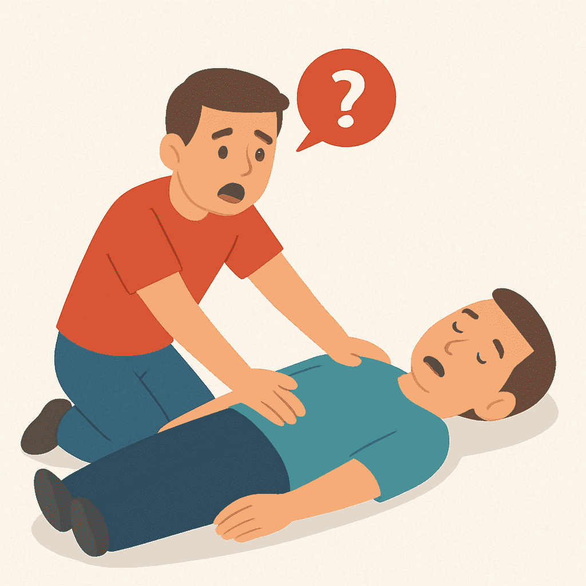
Posicionar al paciente Allinta siriykachiy Suma ikthapiyaña
Coloca a la persona boca arriba sobre una superficie firme. Asegúrate de que esté alineada.
Runata hanp'aqman pampa kaqllapi sirichiy. Cuerpon chiqan kananpaq qhaway.
Jaqiru althapt'ayaña pampa patxaru. Suma chiqachatañapataki uñjañamawa.
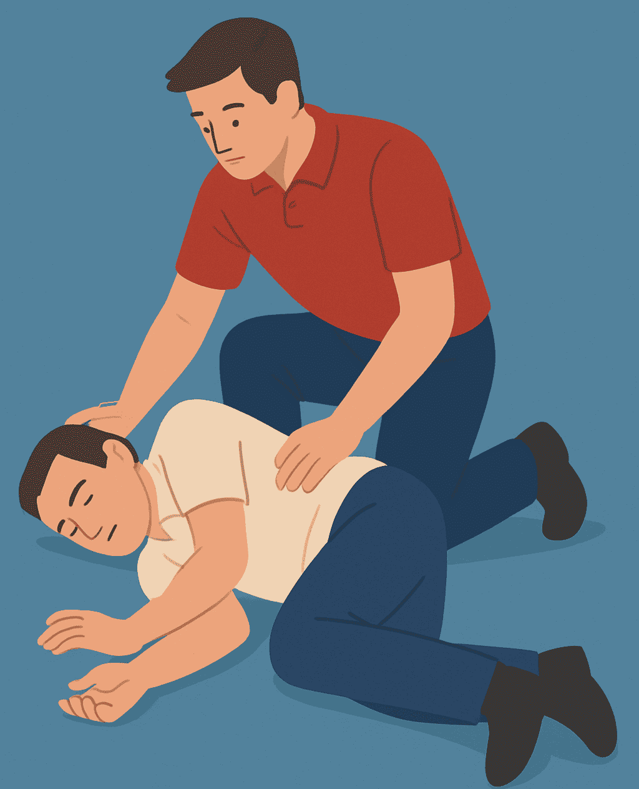
Compresiones en el pecho Qhasqupi mat'iy Chuymat ñit'iña
🤲 Coloca las manos en el centro del pecho y entrelaza los dedos. Realiza compresiones rápidas y fuertes, al ritmo de 100-120 por minuto, con al menos cinco centímetros de profundidad.
🤲 Makiykikunata qhasqu chawpiman churay. Usqhayllata hinaspa kallpawan mat'iy (100-120 sapa minutopi).
🤲 Amparanakama chuymat taypicharu churam. Jank'aki ch'amampi ñit'im (100-120 sapa minutona).
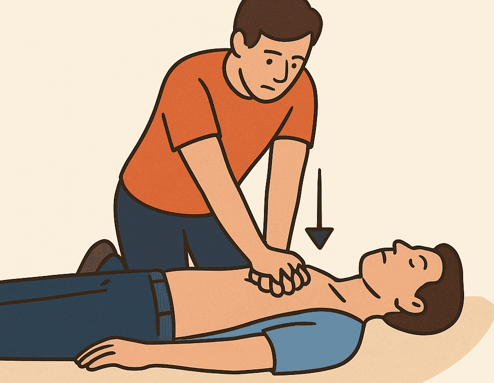
Continuar compresiones Hinallata mat'iy Ñit'iñampi sartaña
🔁 Continúa las compresiones sin detenerte hasta que llegue ayuda o la persona reaccione. Mantén el ritmo constante. Si te cansas, pide a alguien que te reemplace.
🔁 Ama sayaspa mat'iy yanapay chayamunankama. Sayk'uspaykiqa huk runawan usqhaylla tikrachikuy.
🔁 Jan sayt'asa ñit'iñamawa yanapt'iri purinkama. Qarjataxa, yaqhampi jank'aki turkasiñamawa.
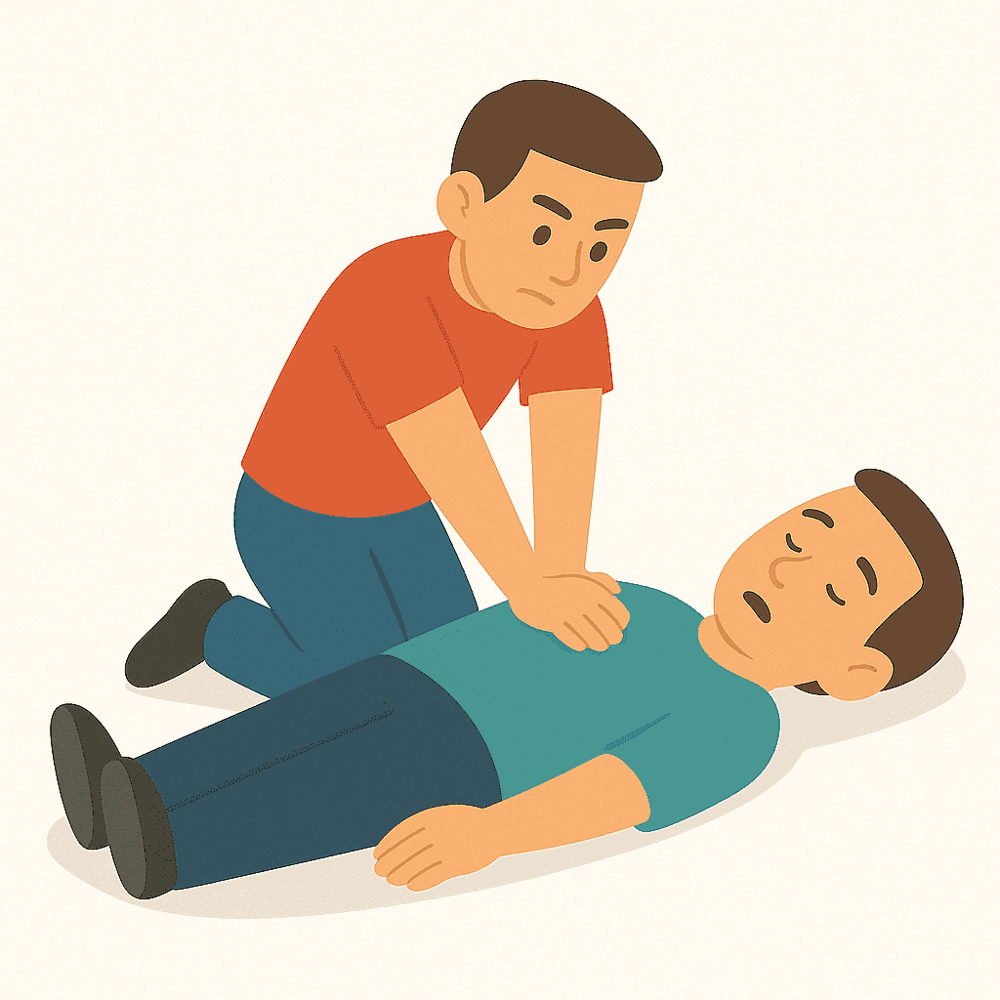
Tratamiento de Heridas K'irisqakuna Hampiy Ch'axwanaka Qollaña
Para heridas menores: Aslla k'irisqakunapaq: Jisk'a ch'axwanakataki:
Lávate bien las manos con agua y jabón Makiykita yakuwan jabonwan allinta maqchikuy Amparanaka umi jabun ukampiwa sumax jaquntaña
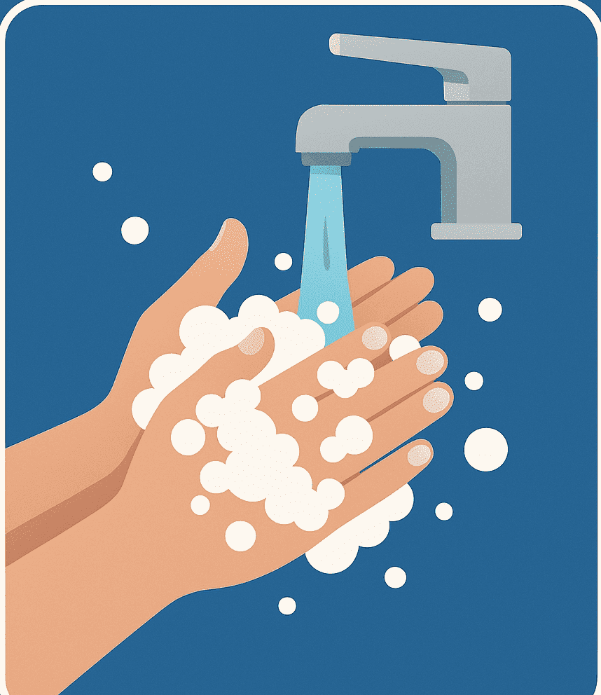
Detén el sangrado Yawar lloqsiyninta sayachiy Wila mistuyiri sayarachi
🩸 Presiona la herida con un paño limpio hasta que deje de sangrar.
🩸 Ch'uya p'achawan k'irita mat'iy yawar sayanankama.
🩸 Ch'uña ch'uñumpi ch'axwa ñit'asa wila mistuyir saykañkama.
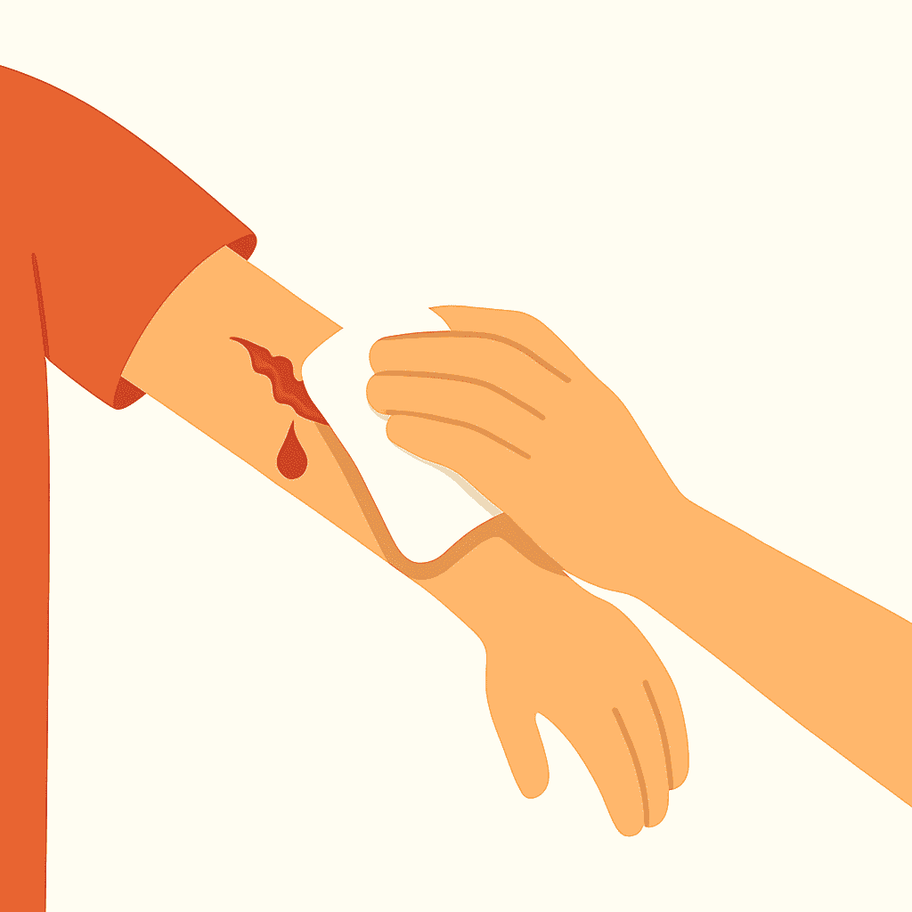
Limpia la herida K'irita ch'uyanchay Ch'axwa jaquntaña
💦 Lávala suavemente con agua limpia para quitar suciedad.
💦 Llamp'ullata ch'uya yakuwan mayllay, llapa qhellinkuna lloqsinanpaq.
💦 Ch'uña umimpi llamp'uki jaquntaña q'añu apsuñataki.
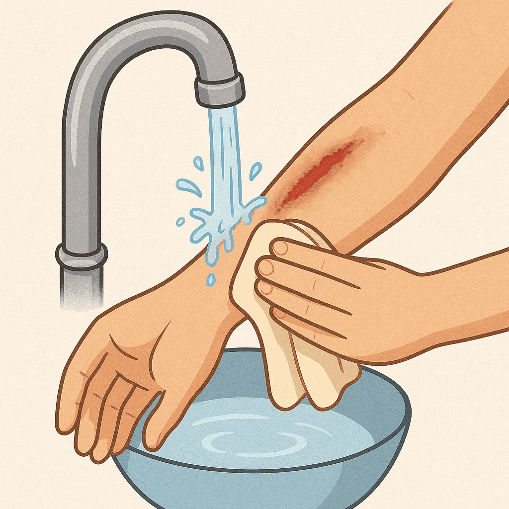
Aplica pomada médica, si tienes Hampita churay Qulla churañamawa
💊 Pon poca cantidad.
💊 Hampiyoq kaspaykiqa, aschallata k'iri pataman churay.
💊 Qulla utjchi ukatxa, jisk'akiwa ch'axwa pataru churañamawa.
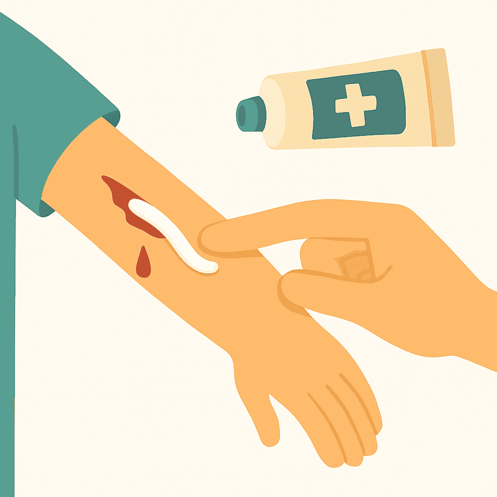
Cubre la herida K'irita tapay Ch'axwa pakayaña
🩹 Coloca una venda o curita limpia y cámbiala cada día o si se moja.
🩹 Ch'uya p'istunawan otaq curitawan k'atuy. Sapa p'unchay cambiay, otaq hoq'o kaptinpas.
🩹 Ch'uña vendar curita churañamawa. Sapa uru mayjt'ayaña jan ukax um jayawchi ukatxa.
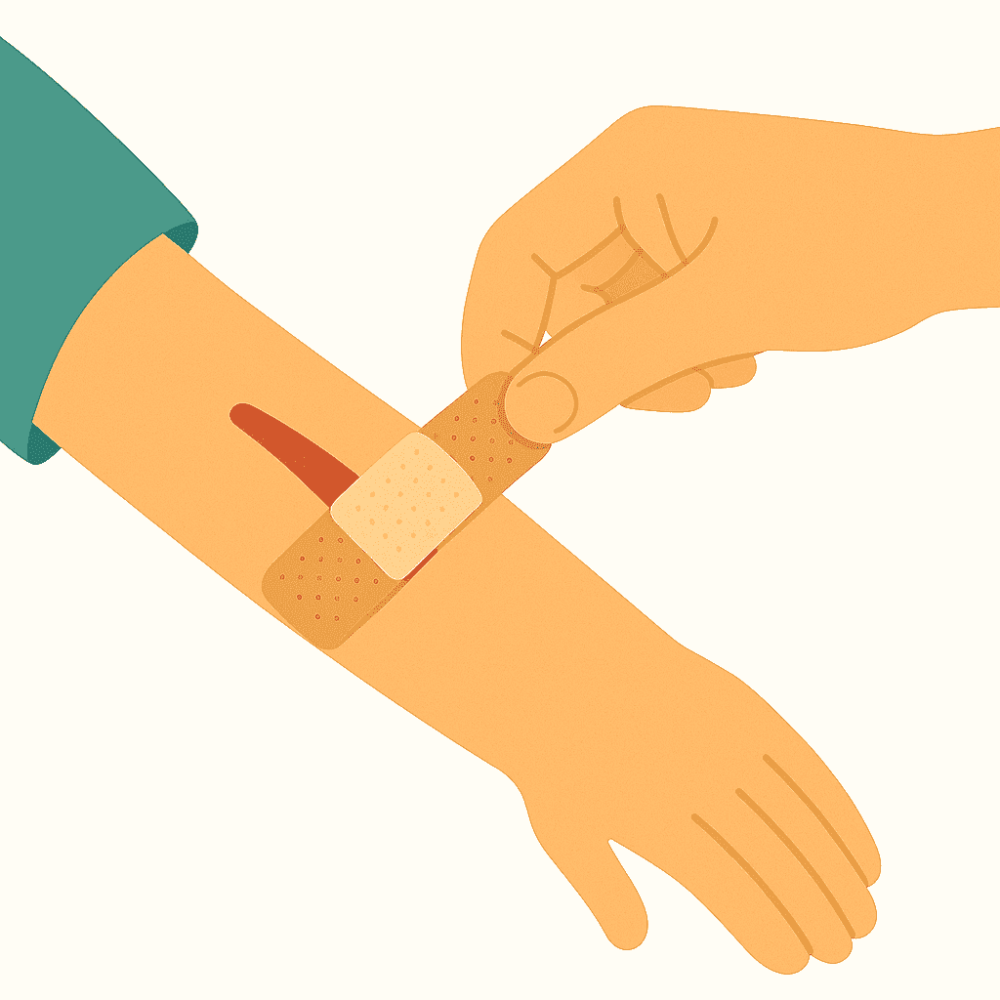
- Es una mordedura de animal Uywa khanisusqaptiki Animalan k'itxiriskanawa
- Hay algo incrustado Ima k'iskanpas k'iri ukhupi kashaptin Yänakax ch'axwan manq'haratäki
- Ves enrojecimiento, hinchazón o pus Pukanayashan, punkishan otaq q'eyachakunpas Wila, puqu, ch'ulla uñjata
- El sangrado no se detiene después de 10 minutos Chunka minutos pasasqanmanpas yawar mana sayaqtin Wila mistuynix janiw sayt'kiti 10 minutu ñit'asaxa
Cómo actuar ante una herida grave Hatun K'iripi Yanapay Jach'a ch'axwanakana yanapt'aña
Lávate las manos y ponte guantes Makiykita maqchikuy hinaspa guantesta churakuy Amparanaka jaquntañamawa ukat guantes uchantaña
Controla el sangrado Yawarta sayachiy Wila mistuyiri kamachaña
🩸 Presiona la herida con un paño limpio. Presiona firme y constante. No la sueltes hasta que el sangrado disminuya.
🩸 Ch'uya p'achawan k'irita mat'iy. Kallpawan hinaspa mana saqespa mat'iy, yawar pisiyanankama.
🩸 Ch'uña ch'uñumpi ch'axwa ñit'asa. Sinchita ukat jan sayt'asisa ñit'aña, wila jisk'achañkama.
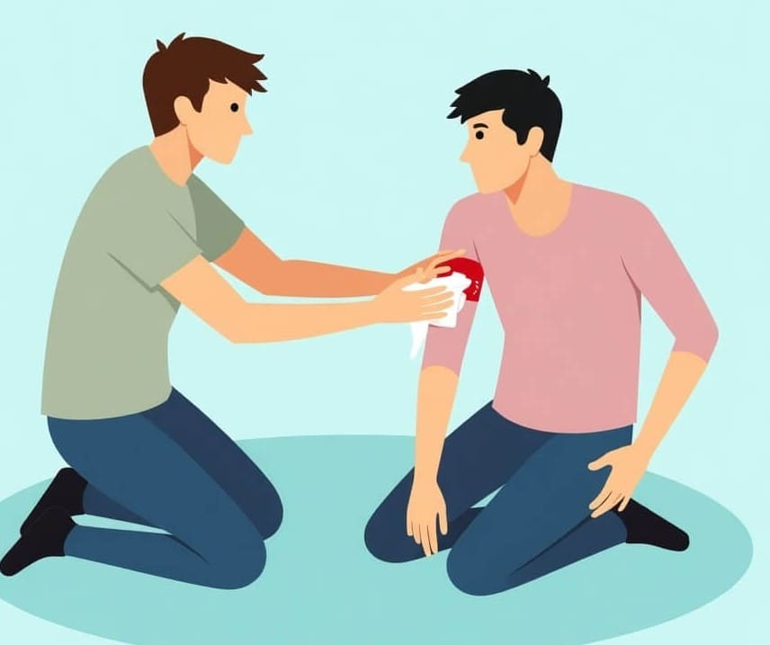
Eleva la herida K'irita hoqariy Ch'axwa jithsuyaña
⬆️ Acuesta a la persona. Eleva la zona herida por encima del corazón si puedes.
⬆️ Onqosqata siriykachiy. K'irisqa parteta sonqonmanta aswan altoman hoqariy.
⬆️ Jaqixa irpasi. Ch'axwa chuyma patat jithsuyaña yatkchi ukatxa.
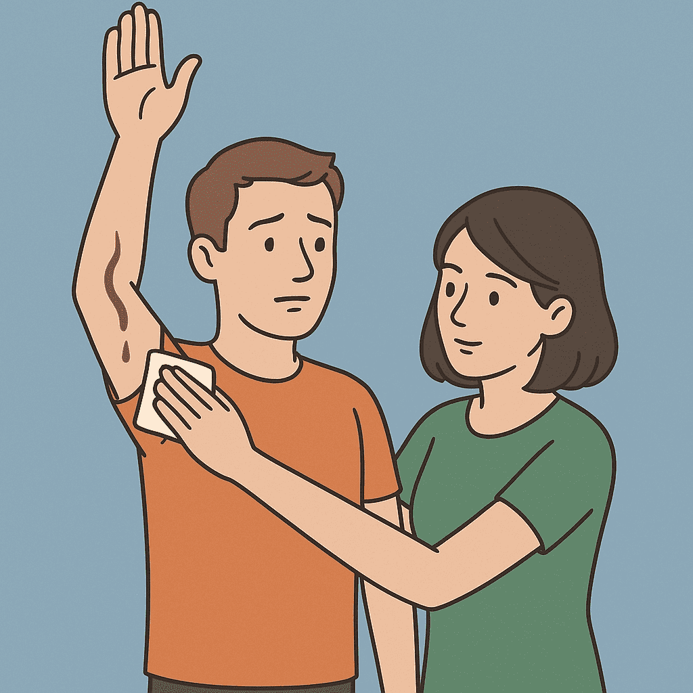
Si el corte es profundo: usa tiras adhesivas K'iri ukhu kaptin: k'iri mat'inawan churay Ch'axwax manqha chi ukatxa: liq'ichir chimpunaka apnaqaña
📌 Colócalas cruzando el corte. Une los bordes sin estirar la piel.
📌 K'iri patankunata hukllachay mana qarayta chutaspalla.
📌 Kantinaka mayacht'aña jani janchipa aystasa.

Venda la herida K'irita p'istuy Ch'axwa vendar pakayaña
🩹 Cubre con una venda limpia. No quites la anterior venda. Debe estar firme, pero sin cortar la circulación. Los dedos deben verse rosados y calientes.
🩹 Ch'uya p'istunawan k'atuy. Ama ñawpaq churaykusqayki p'achata horqoychu. P'istunaqa mat'isqa kanan, yawar purinanpaq hina. Rukanakunaqa puka q'uñillataq kanan.
🩹 Ch'uña vendar pakayaña. Janiw nayrïr vendar apsuñakiti. Sinchïñapawa, jan ukax janiw wila sarnaqañ wiskhañapakiti. Liqitanakax wila ukat junt'u uñstasiñapawa.
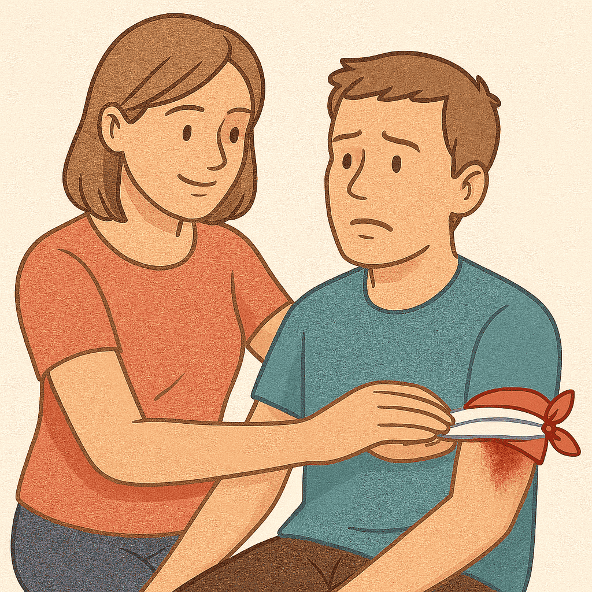
Mantén la calma Ama mancharikuychu Sumaqa amuyt'asiña
😌 Habla con voz tranquila. Mantén a la persona despierta y quieta.
😌 Llamp'u kunkallawan rimapayay. Onqosqata rikch'asqata hinaspa tiyayisqata kachiy.
😌 Suma arsumpi aruskipt'aña. Jaqixa uñstata ukat jan kuyusisa imañapa.
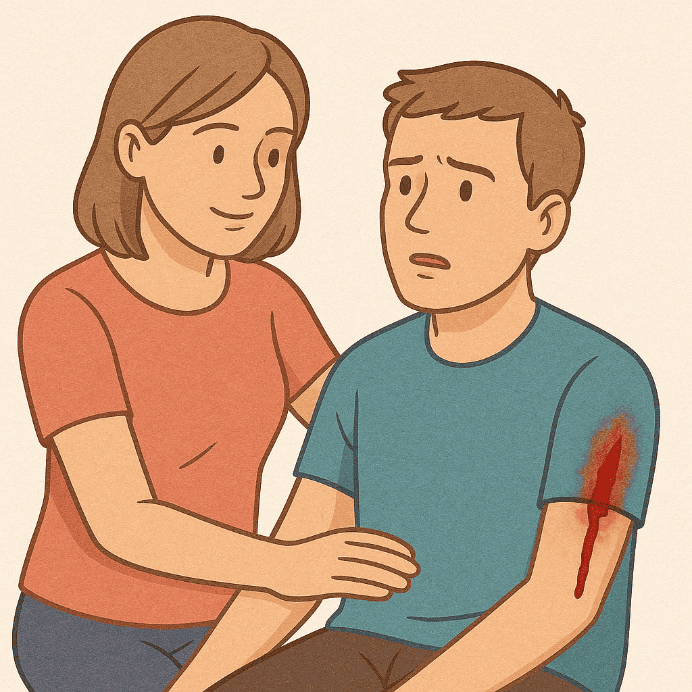
Mantén el calor Q'uñichiy Junt'uñapa imañapa
🛏️ Cúbrela con mantas o ropa. El shock puede causar pérdida rápida de calor.
🛏️ Mantawan otaq p'achawan p'istuy. Cuerpon chiriyaptinqa usqhaylla p'istuna.
🛏️ Phawasampi jan ukax isinakampi pakayaña. Shockax jank'aki junt'uñap chhaqtayaspawa.
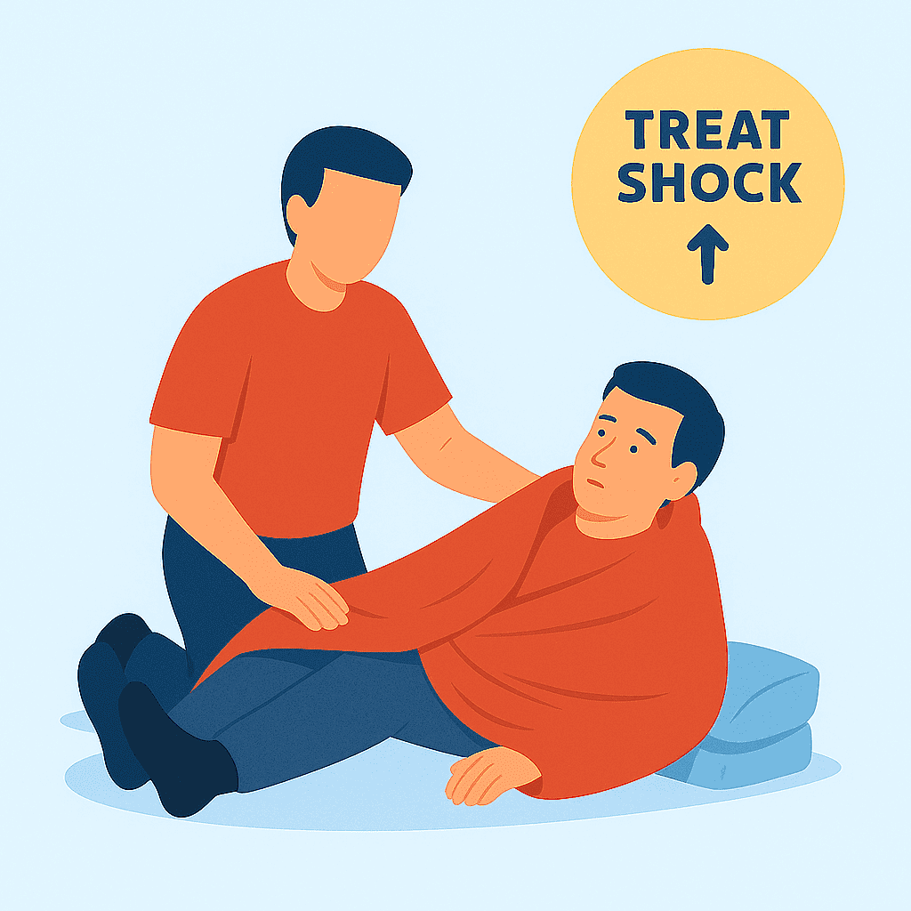
Vigila signos de shock Unanchakunata qaway Shock uñanchanakar uñjaña
⚠️ Palidez, sudor frío, respiración rápida o confusión. Si aparecen, es una urgencia.
⚠️ Uyan yuraqayan, chiri humpin, usqhayta samaykun otaq umampas muyun. Kaykuna kaptinqa, utqaylla hampiqman apay.
⚠️ Janq'u, thaya jithintata, jank'aki samsuña jan ukax pantjata. Uñstchi ukatxa, jank'akiw qhanañataki.
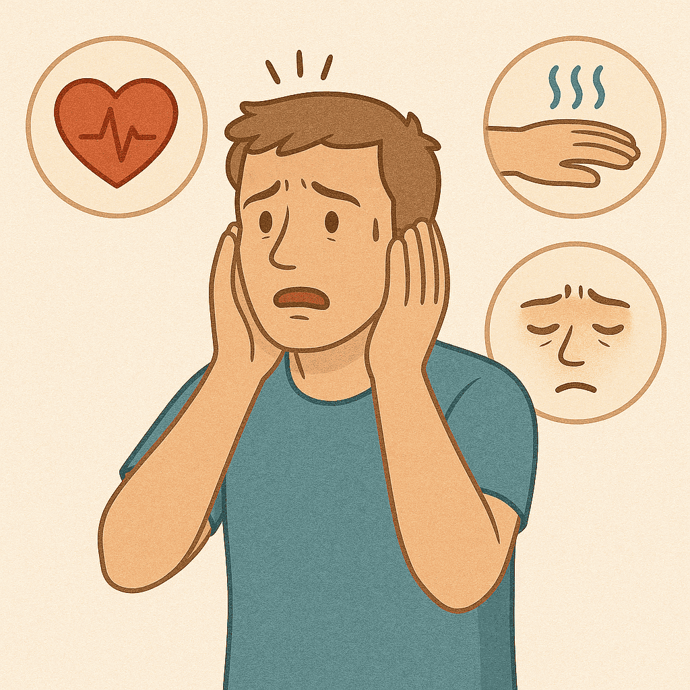
- NO lo retires AMA horqoychu JANIW apsukañakiti
- NO presiones sobre él AMA patanta mat'iychu JANIW pataru ñit'añakiti
- Fíjalo con vendajes alrededor Muyuriqnillanta p'istuspa sumaqta sayachiy Muyurjankir vendar jan unxtayañapataki luraña
- No permitas comer, beber ni fumar Ama imatapas mikuchiychu, ukyachiychu, nitaq sayachiychu JANIW manq'añasa, umañasa ni q'uwuñakiti
- Espera a emergencias Yanapakuy chayamunankama suyay Emergencia yanapt'irinakar suyaña
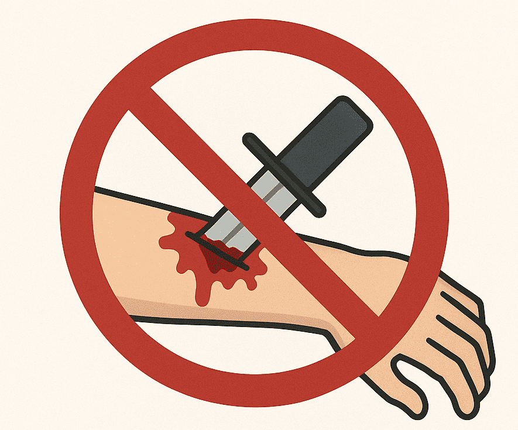
Tratamiento de Quemaduras Ruphasqakuna Hampiy Phisqatanaka Qollaña
Para quemaduras de primer grado: Ñawpaq kaq ruphasqakunapaq: Nayriri phisqatanakataki:
Enfría la quemadura Ruphasqata chiriyachiy Thiyata thayachañamawa
💧 Coloca la zona afectada bajo agua durante quince minutos. Esto reduce el dolor.
💧 Ruphasqa cheqasta yakuwan chunka phisqayuq (15) minutokama mayllay. Kayqa nanaytan pisiyachin.
💧 Thiyata chiqaru umampi tunka phisqani minutunakama ch'aqllam. Ukax usuñawa jisk'achayi.
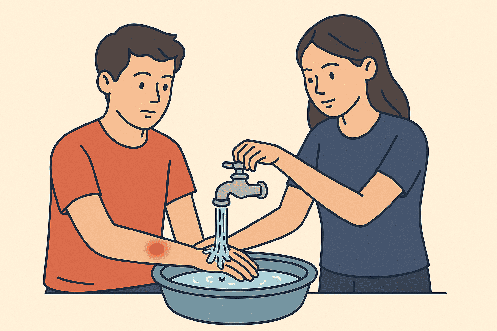
Retira objetos ajustados Mat'isqa imakunata horqoy K'askasir yänaka apsuñamawa
⚠️ Quita anillos, relojes, pulseras y ropa suelta antes de que la zona se inflame. La hinchazón puede hacer que estos objetos corten la circulación.
⚠️ Siwichikuna, relojkuna hinaspa p'achakunata manaraq punkishaptin horqoy. Punkisqaqa yawar puriyta wisq'achinmanmi.
⚠️ Sillunaka, relojonaka ukat p'achanaka janïra puqurinkasaxa jaqukañamawa. Puquyiqa wila sarnaqäwiruw jark'aspa.
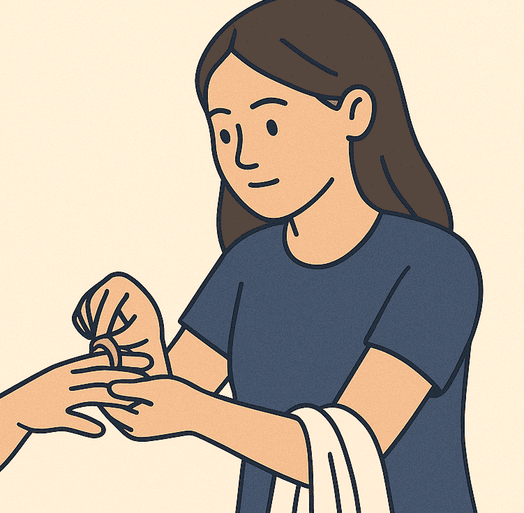
Aplica tratamiento tópico K'iri patapi hampita churay Patan qullaña churaña
🌿 Aplica gel de aloe vera o crema hidratante suave.
🌿 Sábila (aloe vera) utaq llamp'u cremawan churay. Kayqa qarata sumaqta yanapan.
🌿 Aloe vera gel jan ukax llamp'u qullampiw churañama. Akax janchiruwa yanapt'i.
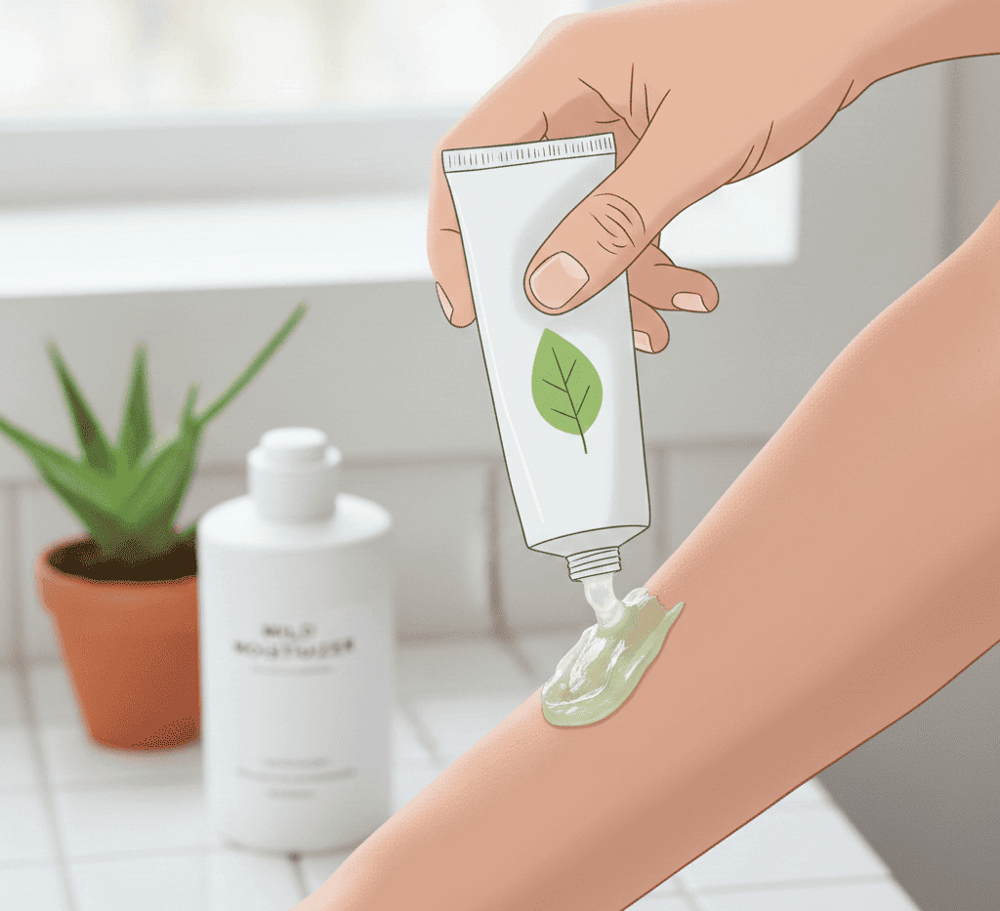
Controla el dolor Nanayta sayachiy Usuñ kamachaña
💊 Toma analgésicos de venta libre como paracetamol o ibuprofeno según las indicaciones del envase.
💊 Nanay pasachiq hampikunata ukyay, paracetamol utaq ibuprofeno hina.
💊 Usuntañ pasayiri qullanaka umañamawa, paracetamol jan ukax ibuprofeno.
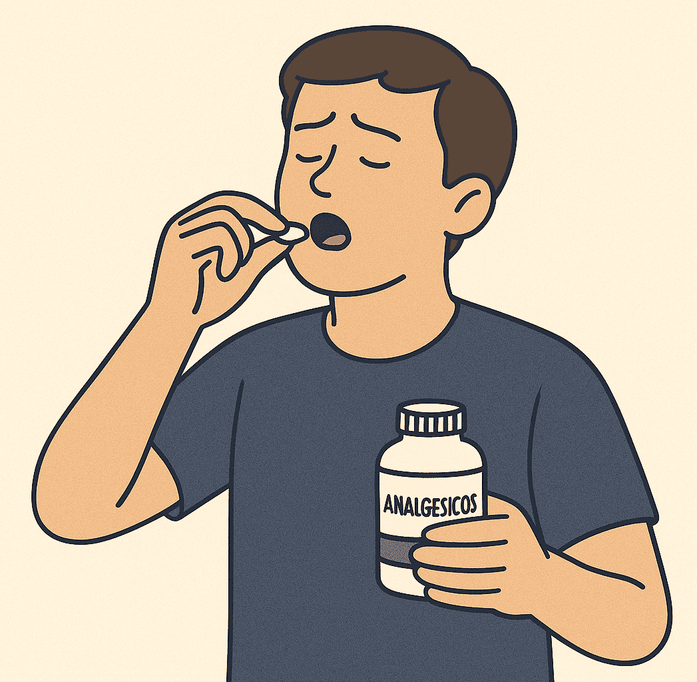
- Hielo directamente sobre la quemadura Chhullita chiqamanta ruphasqapa patanpi Chhullixa chiqpacha phisqat patana
- Mantequilla, aceite o pasta dental Mantequilla, aceite utaq kiru maqchiq pasta Mantequilla, aceite jan ukax laka jaqunt'ir pasta
- Algodón que pueda adherirse Algodón k'askakunman Algodón k'askasniriwa
- Remedios caseros no comprobados Mana yachasqa wasipi hampikuna Jan yatir utan qollañanaka
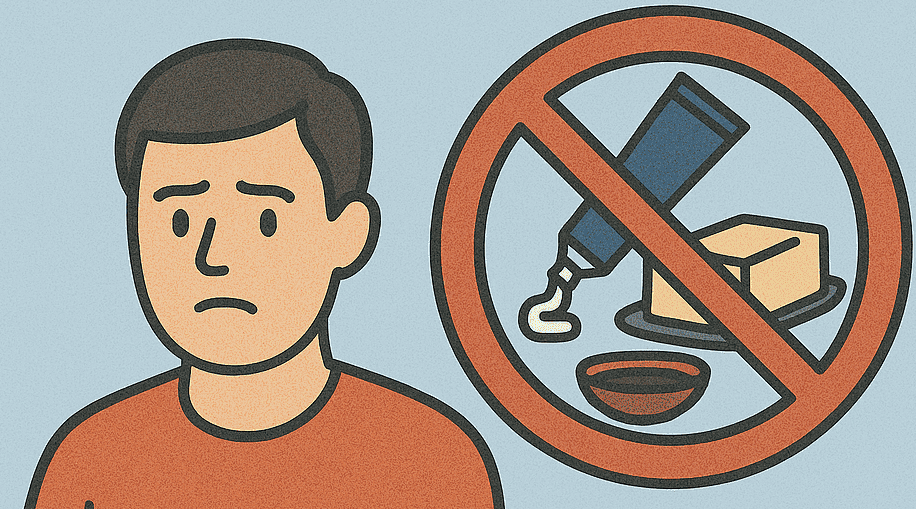
Para quemaduras graves (segundo y tercer grado): Hatun ruphasqakunapaq (iskay, kimsa kaq): Jach'a thiyatanakataki (payiri, kimbiri):
Aleja del peligro Peligromanta karunchay Peligrumata jark'aqasiña
🚨 Saca a la persona del fuego y el calor. Asegúrate de que el lugar sea seguro.
🚨 Runata ninamanta usqhaylla horqoy. Mana imapas kananpaq sumaqta qhawariy.
🚨 Jaqixa ninamata jank'aki apjaqaña. Chiqaxa jan imas pasañapataki uñjañamawa.
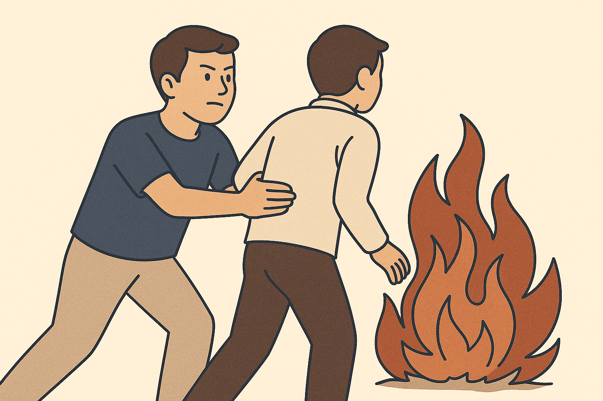
Apaga el fuego Ninata wañuchiy Nina jiwayaña
🔥 Si la ropa arde: detente, tírate al suelo y rueda. También puedes apagar con una manta o prenda gruesa.
🔥 Sichus p'acha ruphanman: sayay, pampaman urmay hinaspa muyuriy. Rakhu mantawanpas wañuchiwaqmi.
🔥 P'achaxa ruphasipana: sayt'aña, pampar jikhxatañamawa ukat muyuntañamawa. Jach'a mantampi jiwayaña.
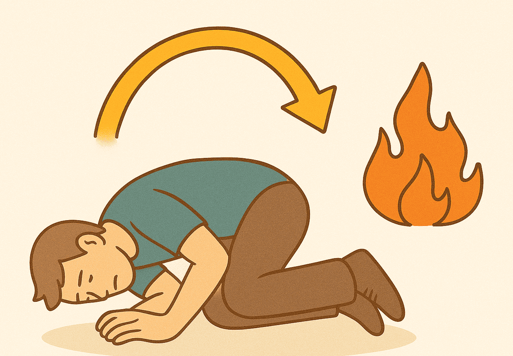
No arranques la ropa pegada Ama k'askasqa p'achata horqoychu Janiw k'askasir p'achar apjaqañäkiti
⛔ Solo quita la ropa suelta. No toques ampollas ni prendas adheridas a la piel.
⛔ Ama phuru-phurukunata p'akiychu. Ama qaraman k'askasqa p'achakunata llamiychu.
⛔ Janiw phururunaka llamkañäkiti. Janirakiw janchiru k'askasir p'achanaka apjaqañäkiti.
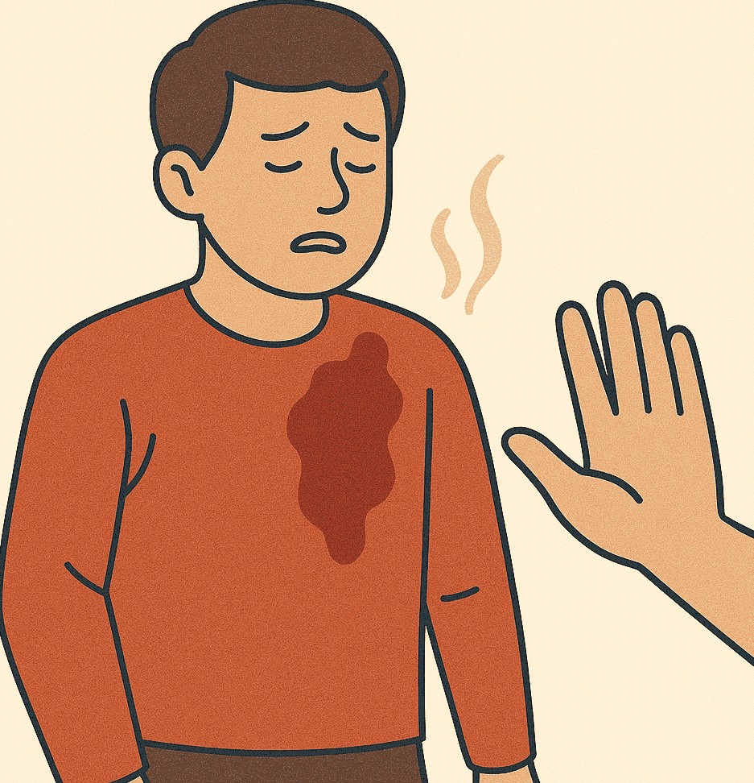
Enfría la quemadura Ruphasqata chiriyachiy Phisqata thayachañamawa
💧 Usa agua por hasta veinte minutos.
💧 Unuwan (yakuta) iskay chunka minutokama talliy (churay).
💧 Umampi pätunka minutonakakama ch'aqllaña.
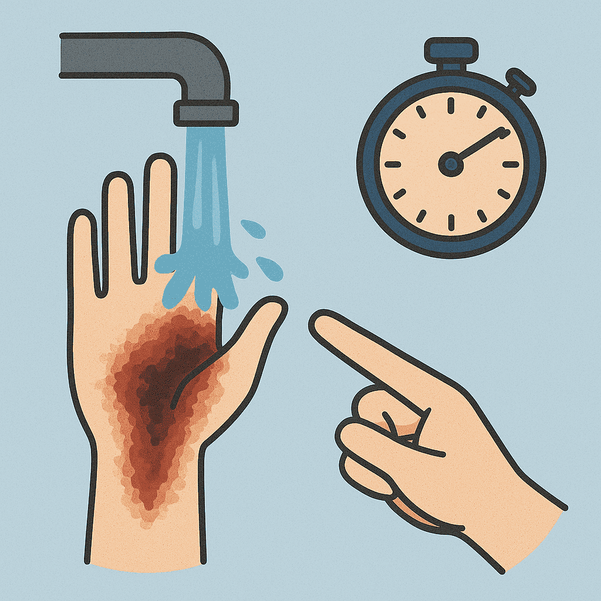
Cubre la herida K'irita pakay K'irixa pakayaña
🩹 Usa un paño limpio, húmedo y que no se pegue. No uses algodón.
🩹 Ch'uya, humedecisqa hinaspa mana k'askaq phuchkuta (tilla) churay. Ama algodón (utkhu) churaychu.
🩹 Ch'uñu, umäwi ukat jan k'askasiri ch'uñu apnaqaña. Janiw algodón apnaqañäkiti.
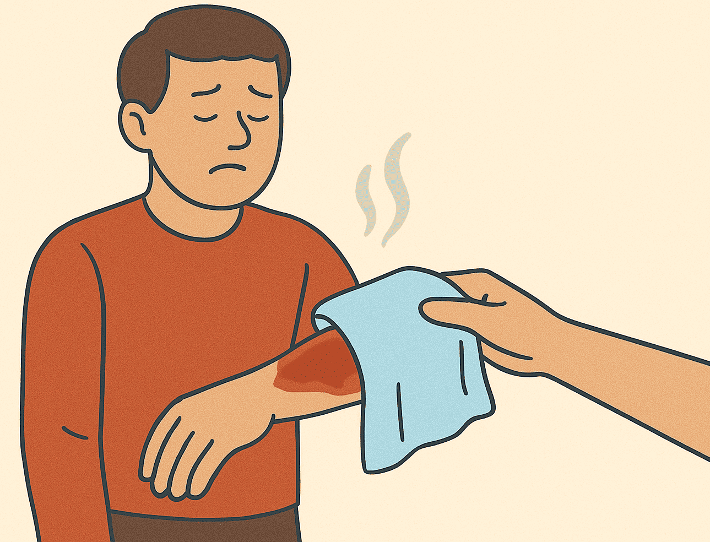
Evita el shock Llakikuymanta amachay Manchañ jan uñstañapataki
⚠️ Acuesta a la persona, cúbrela con una manta y, si puedes, eleva un poco las piernas.
⚠️ Runata siriy, mantawan qatay hinaspa chakinkunata pisillata hoqariy.
⚠️ Jaqixa irpayaña, mantampi qataña ukat jisk'akiw kayunaka jithsuyaña.
- Aplicar hielo directamente Chhullita chiqamanta churay Chhullixa chiqpacha churañakiti
- Reventar las ampollas Phurukunata p'akiy Phururunaka p'akiyaña
- Usar cremas o pomadas sin indicación médica Cremanakata doctorpa mana niyninwan churay Qollirin jan sapxir crema apnaqaña
- Permitir que la persona coma o beba (puede necesitar anestesia) Mikuyta otaq yakuta qoy (anestesia necesitakunman) Manq'aña jan ukax umaña churaña (anestesia munaspa)
Manejo de Fracturas T'aqasqakuna Kamachiy P'akitanaka Kamachaña
🦴 Fractura Cerrada - El hueso está roto pero la piel intacta 🦴 Wisq'asqa T'aqasqa - Tullu t'aqasqa ichaqa qara mana k'irisqachu 🦴 Ist'ata P'akita - Ch'aka p'akit ukampis janchiruxa jan ch'axwäkiti
Signos de fractura cerrada: Wisq'asqa t'aqasqapa rikch'ayninkkuna: Ist'at p'akit uñanchanakapa:
- Dolor intenso Sinchi nanay Wali usuntañ
- Hinchazón y moretones Punsiy, yana punkariy Punsiyañ, ch'iyar punkarañ
- Deformidad visible Mana allin rikuriq Mä allin uñakipan
- Incapacidad para mover o usar el área Chay cheqasmanqa kuyurichiy utaq servichiy mana atiy Ukjawa kuyuyañ jan ukax apnaqañ mä yatiña
Procedimiento para fracturas cerradas: Wisq'asqa t'aqasqakunaman ruwaykuna: Ist'at p'akitanakataki lurawinaka:
No mover la extremidad Ama extremidadta kuyuchiychu Janiw extremidad kuyuyañäkiti
⚠️ Mantén a la persona quieta. Mover puede causar más daño.
⚠️ Runata mana kuyurichiy. Kuyurichiyqa aswan nanaywan tukupunman.
⚠️ Jaqi jan kuyuyañapa. Kuyuyañaxa juk'amp usutata puririnrakiwa.
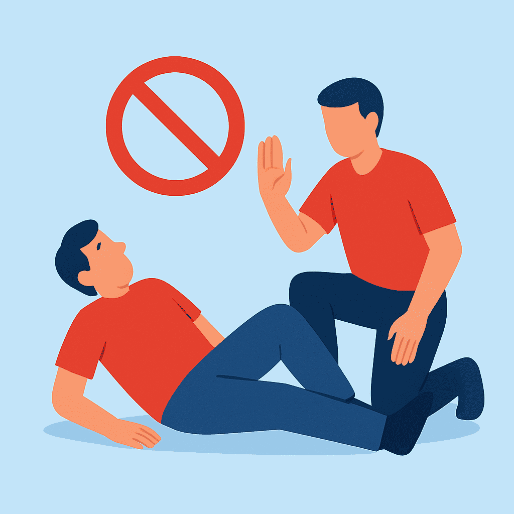
Inmovilizar con férulas Taqlla imatapas churaspa mana kuyurichiy Tabla ukanak apasiñasa jan kuyuchiñäkiti
Usa tablas, cartón grueso o materiales firmes. Coloca en la posición encontrada (no enderezar). Ata con vendas sin apretar demasiado.
Tablakunata, rakhu qara raphita (cartón) utaq sinchi imaymanakunata servichikuy. Imaynatas tarirqanki chayllapi churay (ama cheqanchaychu). Vendakunawan watay ama nishuta ñit'ispa.
Tablanaka, thuru q'api (cartón) jan ukax ch'ama yänakamp luray. Kunjamatix jikxatktas ukhamaraki usuchjata churay (jan chiqañchiriti). Vendarapimpi watañawa jan sinti ñit'isa.
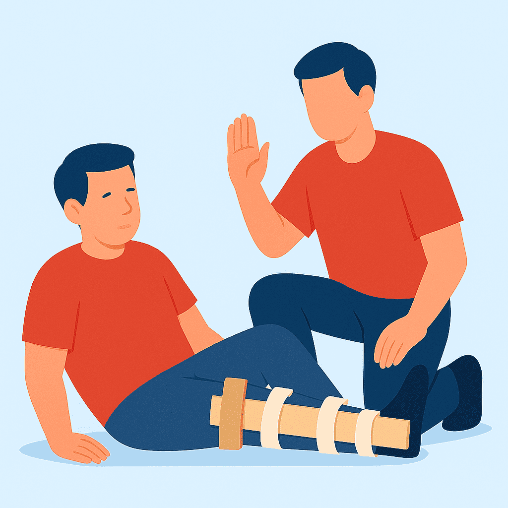
Aplicar hielo Chhullita churay Chhullisa churañamawa
❄️ Envuelto en un paño, durante quince minutos.
❄️ Chhullunkhayasqa p'achawan p'istusqa, chunka pichqayuq minutokama.
❄️ Khunu thuru mä p'achampi wayt'ata, tunka phisqani minutunakama.
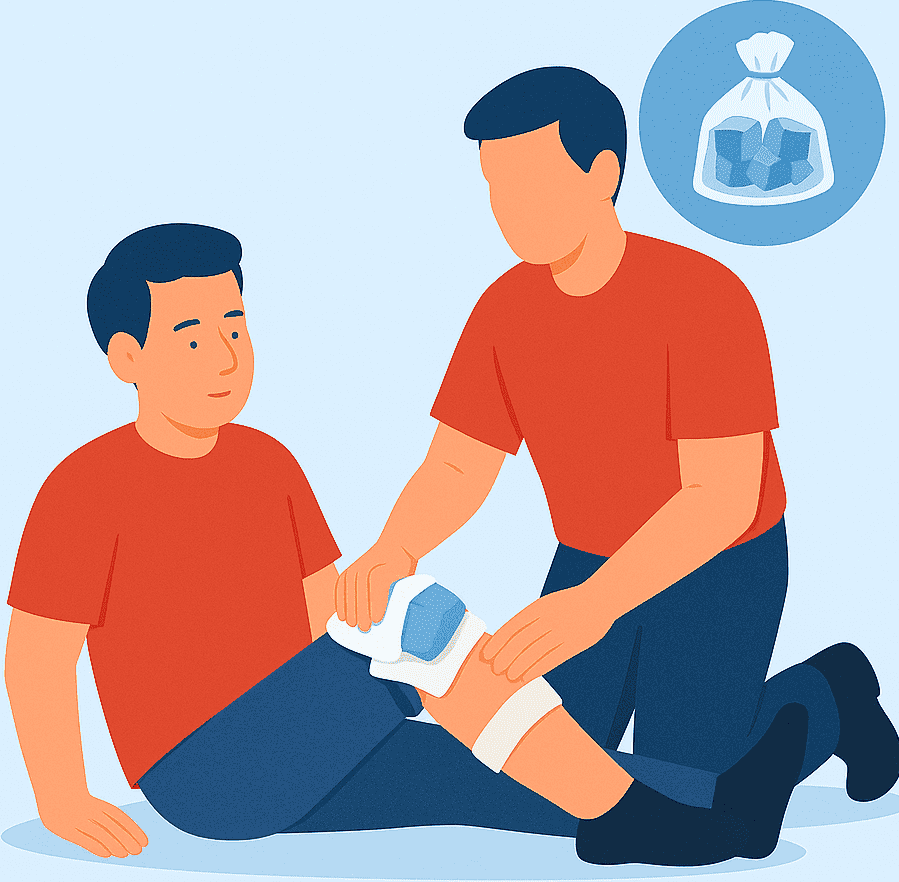
Elevar si es posible Sichus atiykuwanqa huqariy Yatiski ukhaxa jithsuyañamawa
Si la fractura está en brazo o pierna, eleva por encima del corazón (si no causa más dolor). Ayuda a reducir hinchazón.
Sichus maki utaq chaki t'aqasqa kanman, sunqu patanman huqariy (sichus mana aswan nanaymanchu). Punsiyninata pisiyachinpaq yanapan.
Ampara jan ukax kayu p'akitki ukhaxa chuyma patat jithsuyaña (jan juk'amp usuntañ puriykchi). Punsiyañ jisk'aptayañatakiw yanapistu.
Vigilar dolor y circulación Nanayninata yawar puriynintapas qhawariy Usuntañatsa wila sarañatsa uñjañamawa
👁️ Observa si la piel cambia de color, la temperatura. Pregunta si siente hormigueo o adormecimiento.
👁️ Qhaway qaranpa llimp'in t'ikrakusqanta, chirichus k'asachus kashan chaytawan. Tapuriy: "¿Susunichu?" utaq "¿Sirk'iyachkanchu?" nispa.
👁️ Uñjam janchi samipa mayjt'atapatsa, junt'üpatsa. Tapuy: "¿Susuñacha?" jan ukax "¿Sirk'iyächiti?" sasa.
🩸 Fractura Abierta - El hueso atraviesa la piel (herida + hemorragia) 🩸 Kichasqa T'aqasqa - Tullu qaramanta lluqsimun (k'iri + yawar) 🩸 Jist'ata P'akita - Ch'akaxa janchirun jithsuya (ch'axwa + wila)
Alto riesgo de infección ósea, hemorragia severa y shock.
Tullupim hatun infección riesgo, yawar sinchi lluqsiy, mancharikuypas.
Ch'akan jach'a infección riesgo, wila wali mistuni, manchañpisa.
Procedimiento para fracturas abiertas (diferente y más urgente): Kichasqa t'aqasqakunaman ruwaykuna (hukniray, astawan utqaylla): Jist'at p'akitanakataki lurawinaka (mayj chhiqha, juk'ampi jalja):
Llama a Emergencias (SÍ O SÍ) Emergenciaman waqyay (ARI UTAQ ARI) Emergenciar jawsaña (JISA JISA)
⚠️ PRIORIDAD ABSOLUTA: Llama de inmediato a una ambulancia. Estas lesiones requieren cirugía y antibióticos urgentes. Es la prioridad número uno.
⚠️ TUKUY ÑAWPAQ: Utqayllamanta ambulanciata waqyay. Kay k'irikunaqa cirugíata antibióticosta utqayllamanta necesitan. Ñawpaq prioridadmi.
⚠️ NAYRÏR JACH'A: Jaljaki ambulanciaru jawsaña. Uka usuwinakax cirugía antibióticosa jaljaki munapxi. Nayrïr prioridadawa.
Detén el sangrado Yawar lluqsiyninata sayachiy Wila mistuyiri sayarachiña
Presiona firme alrededor de la herida con un paño limpio.
⚠️ IMPORTANTE: No presiones el hueso que sobresale.
K'irisqap muyunpaq sinchita ñit'iy phuchka ch'uyawan.
⚠️ CHANIYUQ: Ama tulluta lluqsisqata ñit'iychu.
Ch'axwat muyuntax ch'amki ñit'iña ch'uñu ch'uñampi.
⚠️ ASKINAKA: Janiw ch'akar mistir ñit'añäkiti.
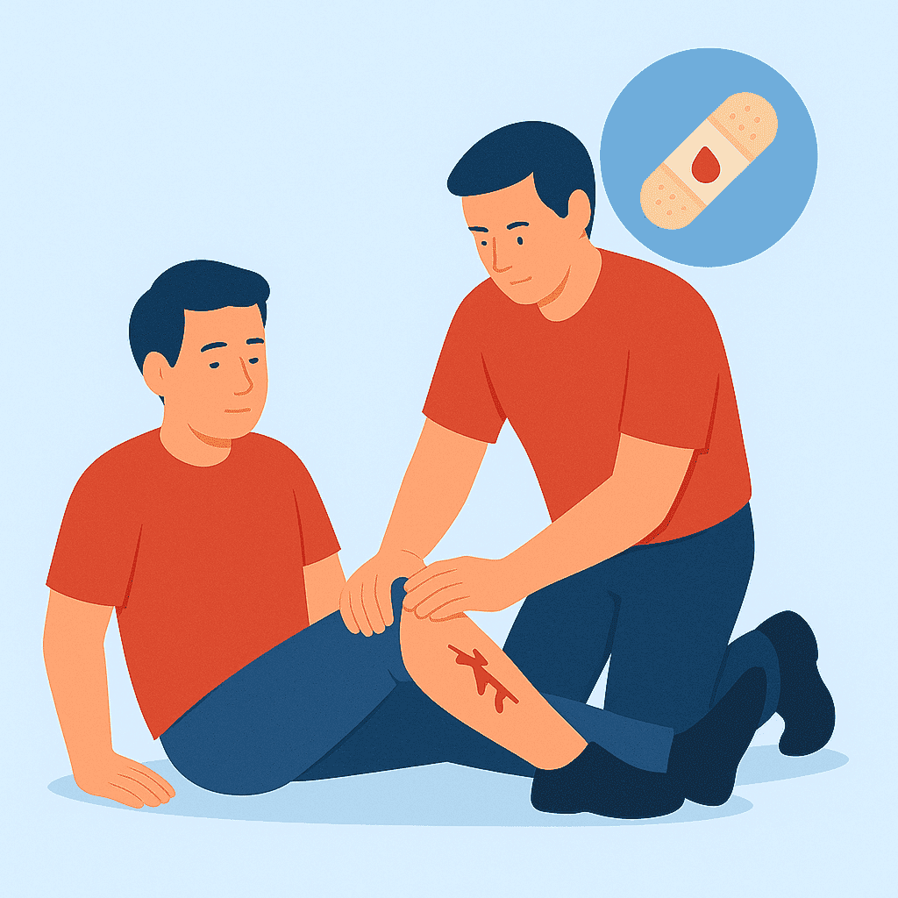
No toques el hueso Ama tulluta llamk'aychu Janiw ch'akar llamk'añäkiti
⛔ NUNCA: No intentes meter el hueso, no lo limpies y no lo empujes. Déjalo como está. Solo un médico puede manipularlo.
⛔ MANAM HAYK'AQPAS: Ama tulluta ukhumanqa kutichiy munaychu, ama maqchiychu, ama tanqaychu. Hina saqiy. Hampiqlla llamk'ayta atinman.
⛔ JANIW KUNA PACHÄKI: Janiw ch'akar manqhankir kutt'ayañ munañäkiti, janiw jaquntañäkiti, janiw tanq'añäkiti. Ukhama jaytaña. Qollirix ukakiw apnaqañapatxa.

Cubre la zona K'irisqata pakay Ch'axwa pakayaña
Pon una gasa o tela limpia sobre la herida y el hueso sin apretar. Esto evita que entren bacterias.
Gasa ch'uya utaq phuchka ch'uya k'irisqaman tulluman churay mana ñit'ispa. Kayqa bacteriasta mana yaykuyta hapin.
Gasa ch'uña jan ukax ch'uñu ch'uña ch'axwaru ch'akaru churañamawa jan ñit'isax. Akax bacteriasar janiw mantañapatakiwa.
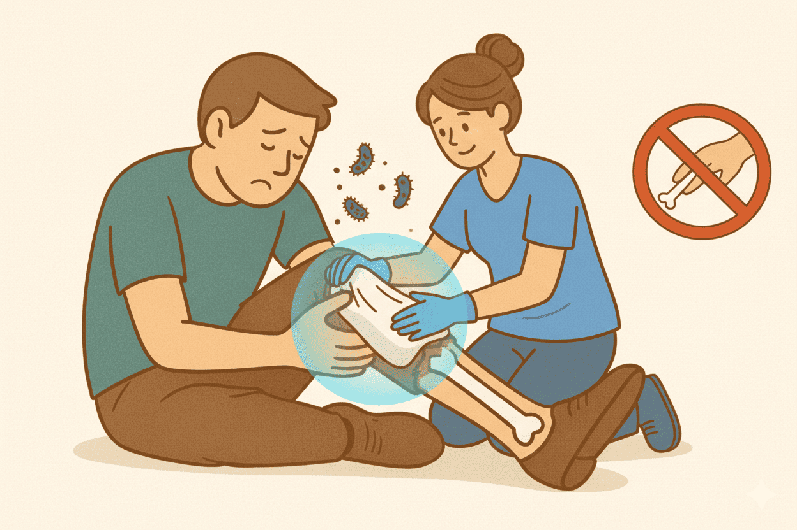
Inmoviliza (Después de cubrir) Mana kuyurichiy (Pakasqamanta) Jan kuyuchiñäki (Pakayasaxa)
Coloca tablillas o soportes a los lados del miembro herido para que no se mueva.
CUIDADO: Sujétalas lejos de la herida abierta.
K'irisqa rakinpa kinrankunaman tablakunata churay mana kuyurinanpaq.
CUIDAKUY: K'irisqamanta karumanta wataykuy.
Usir tuqinkir tablasa jan ukax yanapir churañamawa jan kuyuñapataki.
UÑJASIÑAMAWA: Ch'axwat jayampi wataña.
Evita el shock Mancharikuyta harkay Manchañ jark'aqaña
• Acuesta a la persona
• Tápala con una manta
• Elévale las piernas (si no tiene otras lesiones)
• NO le des comida ni agua
• Háblale para mantener la calma
• Runata uchuchiy
• Mantawan pakay
• Chakirkunata huqariy (mana huk k'irikunachu kaptinqa)
• AMA mikhuyta nitaq yakuta quychu
• Rimaspa thakchachiy
• Jaqir irptayaña
• Mantar pakayaña
• Kayunaka jithsuyaña (jan mayni usuwinakx utjkchi)
• JANIW manq'añ ni uma churañäkiti
• Parlkasax sumaruqa amuyt'ayaña
- Sangrado: Es lo primero que se atiende (en la cerrada es la inmovilización) Yawar: Ñawpaqta qhawarina (wisq'asqapiqa mana kuyurichiy) Wila: Nayrïriw uñjayataña (ist'atankix jan kuyuchiñäki)
- El riesgo de infección es altísimo porque la herida está abierta Infección riesgoqa ancha hatunmi k'iri kichasqa kasqanrayku Infección riesgoxa wali jach'awa ch'axwax jist'ataski
- Casi siempre requiere quirófano Yaqa tukuy kutipi quirófanota necesitan Yaparunakanx quirófano munasiraki
☠️ Envenenamiento ☠️ Millay hampiwan unquy ☠️ Millu qollampi usuña
¡EMERGENCIA MÉDICA! ¡EMERGENCIA QHALI! ¡JANI WALT'AW!
👉 Llama a emergencias de inmediato
👉 Utqayllamanta doctorunata waqyay
👉 Jank'akiw doctorunakaru jawsam
- 📞 CICOTOX: 328-7700 | WhatsApp: 956-740-869 📞 CICOTOX: 328-7700 | WhatsApp: 956-740-869 📞 CICOTOX: 328-7700 | WhatsApp: 956-740-869
- 🚑 SAMU: 106 🚑 SAMU: 106 🚑 SAMU: 106
- 🚓 Policía: 105 🚓 Policía: 105 🚓 Policía: 105
🩺 ¿Qué es? ¿Imataq kanman? ¿Kunasa?
El envenenamiento ocurre cuando una sustancia tóxica entra al cuerpo al tragarla, respirarla, tocarla o por mordedura. Millay hampiwan unquyqa kanman: millayta mikhuspa, samaspa, llamiykuspa otaq kaniykunawanpas. Millu qollampi usuñax utji: manq'asata, samsusata, llamt'asata jan ukax laqhayasitata.
🚨 QUÉ HACER (PASOS CLAROS) Imaynatataq ruwana Kuna lurañasa
Revisa a la persona Runata qhawariy Jaqir uñjaña
• ¿Respira?
• ¿Está consciente?
• ¿Samashanchu?
• ¿Rikch'ashanchu?
• ¿Samsuskiti?
• ¿Amuyasiskiti?
Identifica el veneno (si puedes) Imachus kasqanta riqsiy Kuna millusa uñt'ayaña
Envase, nombre, planta, animal, medicamento
Botella, suti, yura, uywa otaq hampi
Botella, suti, ali, uywa jan ukax qolla
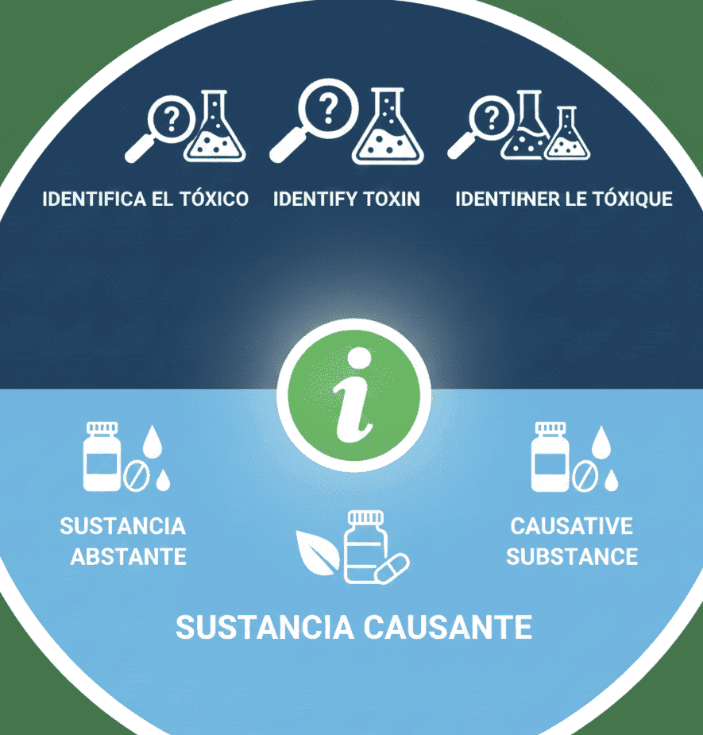
Actúa según el caso Imaynatachus kasqanman hina ruway Kunjamätix ukhamarjam luraña
- ❌ NO provoques vómito ❌ AMA aqtuchiychu ❌ JANIW aqtayañäkiti
- ❌ NO le des líquidos si está inconsciente ❌ AMA unuta qoychu mana rikch'ashaqtinqa ❌ JANIW uma churañäkiti jan amuyaskirikitaxa
- 🌬️ Llévala al aire fresco inmediatamente 🌬️ Utqaylla ch'uya wayraman horqoy 🌬️ Jank'akiw q'uma thiyaru irpaña
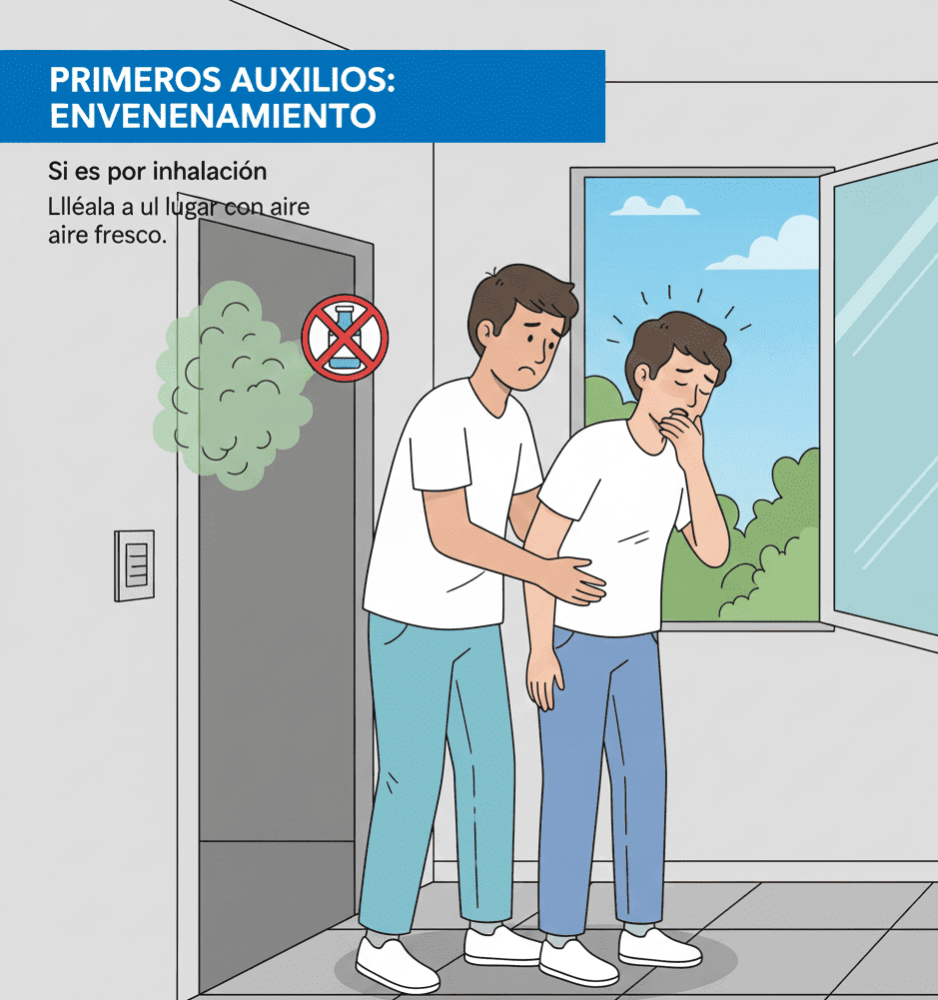
- 💧 Lava con mucha agua por 15 minutos 💧 Askha yakuwan mayllay (15 minutos) 💧 Walja umampi jariruña (15 minutos)
- Quita ropa contaminada Millay p'achata horqoy Isipa apsuñamawa
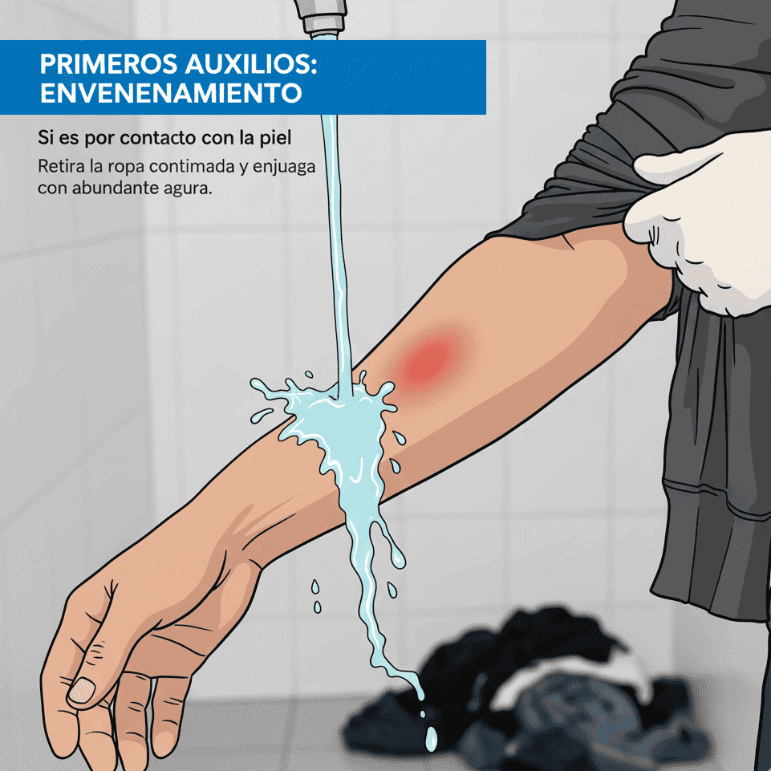
- Mantén a la persona quieta y calmada Runata mana kuyurichiychu Jaqir jan kuyuchañamawa
- Inmoviliza la zona Mana kuyurichiy cheqata Jan kuyuchañamawa cheqax
- ❌ NO cortes, ❌ NO succiones, ❌ NO hielo ❌ AMA kuchuychu, ❌ AMA ch'unqaychu, ❌ AMA qasata churaychu ❌ JANIW k'uchuñäkiti, ❌ JANIW ch'unqañäkiti, ❌ JANIW juyphi churayñäkiti
Si está inconsciente Mana rikch'aqtinqa Jan amuyaskirikitaxa
Colócala de lado (posición de recuperación)
Kinrayninman siriykachiy
Mä tuqin ikt'ayaña
Vigila Qhawashallay Uñjaskakiñamawa
• Respiración
• Pulso
• Estado de conciencia
• Samayninta
• Sunqunpa takayninta
• Rikch'akuyninta
• Samsuñapa
• Chuymap lat'iyapa
• Amuyasir irnaqapa
⛔ NUNCA HAGAS ESTO AMA KAYKUNATA RUWAYCHU JANIW AKA LURAÑANAKÄKITI
- ❌ No provocar vómito ❌ Ama aqtuchiychu ❌ Janiw aqtayañäkiti
- ❌ No remedios caseros ❌ Ama wasipi hampikunata churaychu ❌ Janiw utan qollanaka churañäkiti
- ❌ No mezclar sustancias ❌ Ama hampikunata ch'aqruychu ❌ Janiw qollañanaka mayjt'ayañäkiti
- ❌ No perder tiempo buscando en internet 👉 Llama primero ❌ Ama internetpi maskhaspa tiempota usuchiychu. Waqyay ñawpaqta ❌ Janiw internetan thaqasax tiempor chhaqhayañäkiti. Nayraqat jawsam
Situaciones de Emergencia Utqay Yanapana Ruwaykunan Anxata Yanapawi Lurawinaka
EMERGENCIA MÉDICA – EL TIEMPO SALVA VIDAS ¡UTQAYLLA YANAPAKUY! - Pachaqa kawsaytan qispichin ¡JANK'AKI YANAPAM! - Tiempox jakäwi qhispiyi
🚨 SÍNTOMAS DE ALERTA Willakuqkuna Unancha uñjanaka
Actúe de inmediato si hay: Utqaylla ruway kaykuna kaptin: Jank'aki luram akanaka uñjasa:
- Dolor fuerte en el pecho Qhasqupi sinchi nanay Chuymat jach'a usu
- Dolor que corre al brazo, cuello o mandíbula Nanayqa rikraman, kunkaman otaq k'aqllamanpas mast'arikun Usuw ampararu, kunkaru jan ukax k'ak'ar ch'allt'asi
- Falta de aire Samay p'itisqa (mana samay atiy) Samat p'itita
- Sudor frío, náuseas o mareo Chiri humpi, aqtuy muna otaq uma muyuy Juyphi humpi, aqtuy munaña jan ukax p'iqit muyuta
🆘 QUÉ HACER AHORA Kunanpacha ruway Jichhapach luraña
Llama a emergencias inmediatamente Utqaylla doctorkunata waqyay Jank'akiw doctorunakar jawsam
📞 No esperes a que pase el dolor.
📞 Ama nanay pasananta suyaychu.
📞 Jan usun pasañapa suyt'amti.
Sienta a la persona Runata tiyaykachiy Jaqiru qunuyaña
🛋️ Espalda apoyada, rodillas dobladas
❌ No la acuestes completamente
🛋️ Wasanta t'inkispa (apoyaspa) hinaspa qunqurninta sunch'ispa
❌ Ama pampamanqa t'isñuychu
🛋️ Qhipapa ukat qunqurinakapa t'isnuyaña
❌ Janiw pampat thaxsuyañäkiti
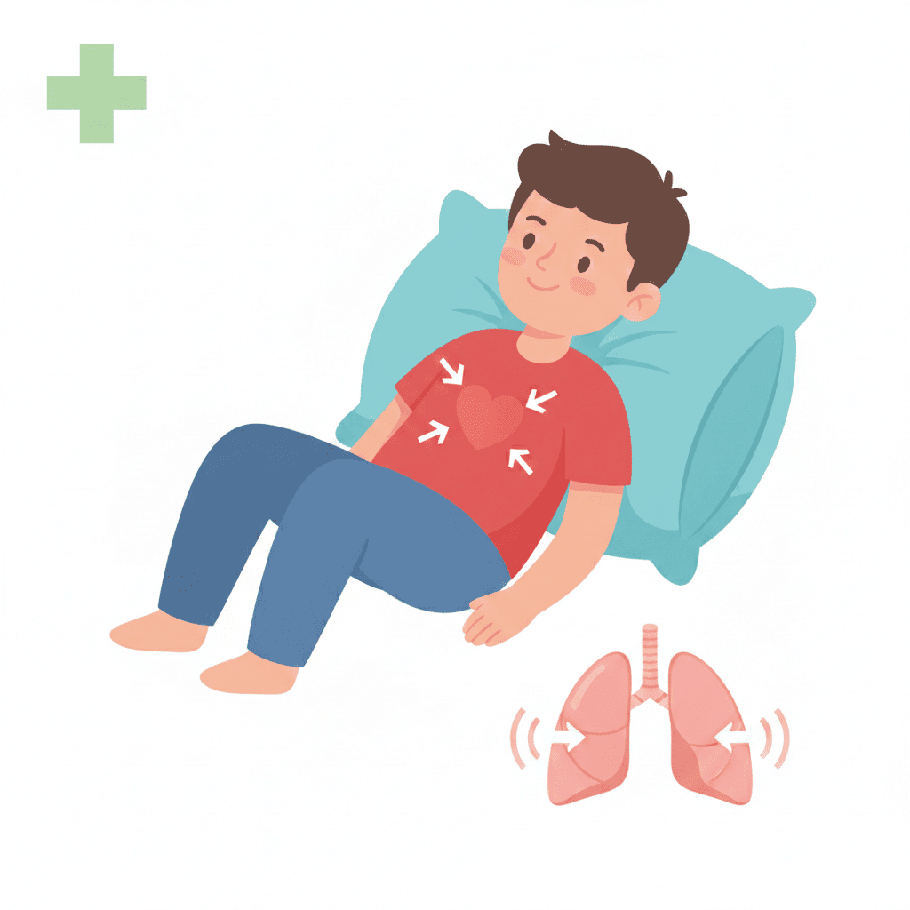
Afloja la ropa P'achanta paskariy Isipa k'acha-k'achachaña
👕 Quita presión del pecho y cuello
👕 Qhasqunpi kunkampi ama mat'isqa kananpaq
👕 Chuymapampi kunkapampi jan ñit'itakañapataki
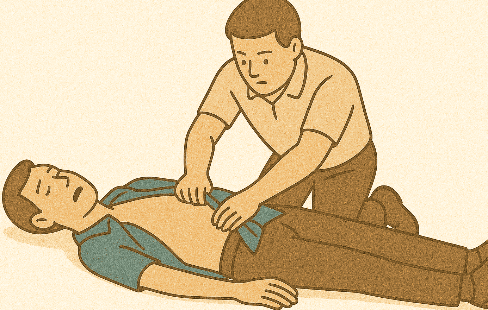
Mantén a la persona despierta Runata rikch'asqata hap'iy Jaqiru sartata uñjaña
💬 Habla con calma
❌ No comida, ❌ no agua, ❌ no medicamentos
💬 Thasniyllawan rimapayay
❌ Ama mikhuyta, ❌ ama unuta, ❌ ama hampita qoychu
💬 Thakhaki parlt'aña
❌ Janiw manq'aña, ❌ janiw uma, ❌ janiw qolla churañäkiti
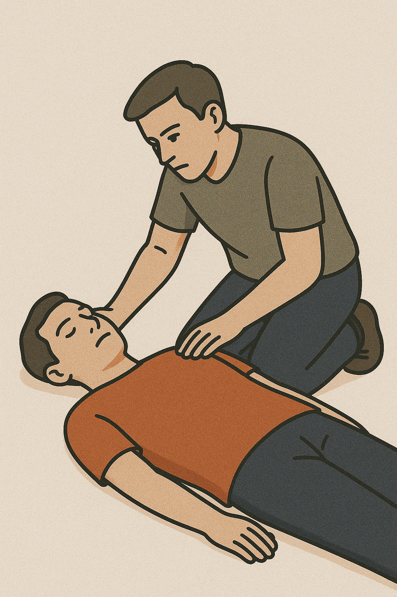
No la dejes sola Amapuni sapallanta saqeychu Janiw sapaki jaytañäkiti
🚗 ❌ No permitas que conduzca
🚗 ❌ Ama carrota manejachiychu
🚗 ❌ Janiw auto apnaqayañäkiti
🫀 SI DEJA DE RESPONDER Mana kutichikuqtinqa Jan amuyaskirikitaxa
Si no respira o no responde: Mana samapakuqtinqa: Jan samsuskpan jan ukax jan sartankpana:
- 👉 Inicia RCP de inmediato 👉 RCP utqaylla qallariy 👉 RCP jank'akiw qalltaña
- Presiona fuerte y rápido el centro del pecho Qhasqu chawpipi kallpawan hinaspa usqhaylla mat'iy Chuymap taypicharu ch'amampi ukat jank'aki ñit'im
- No te detengas hasta que llegue ayuda Ama sayaychu yanapay chayamunankama Jan sayt'asawa yanapt'iri purinkama lurañamawa
MANIOBRA DE HEIMLICH HEIMLICH RUWAY HEIMLICH LURAÑA
(Adultos y niños mayores de 1 año)
(Hatun runakunapaq, huk watayuq wawapaq)
(Jilir jaqinakataki, maya mara jila wawanakataki)
🚨 CUÁNDO ACTUAR Hayk'aq ruwana Kunawachas luraña
- ❌ No puede hablar ❌ Mana rimayta atinchu ❌ Janiw parlirjamäkiti
- ❌ No puede toser ❌ Mana uhuyta atinchu ❌ Janiw ukhurjamäkiti
- ❌ No puede respirar ❌ Mana samayta atinchu ❌ Janiw samsurjamäkiti
👉 Pide a alguien que llame a emergencias de inmediato 👉 Utqaylla yanapakuyta waqyay 👉 Jank'aki yanapirinakaru jawsam
Si tose fuerte, NO hagas nada. Anímala a seguir tosiendo. Sichus kallpawan uhushanman chayqa, ama imatapas ruwaychu. Uhuchallay. Sichus ch'amampi ukhuskpaxa, jan imas luramti. Ukhuñapataki ch'amancham.
🆘 QUÉ HACER Imaynatataq ruwana Kuna lurañasa
Colócate detrás Qhepanman sayay Qhipäxaru sayt'aña
🤝 Rodéale la cintura
👶 Si es niño, arrodíllate
🤝 Runapa qhepanman sayay hinaspa wiqawninmanta marq'aykuy
👶 Wawa kaptinqa qunqurikuy
🤝 Jaqi qhipäxaru sayt'aña, ch'iñupat qhumant'aña
👶 Wawäspaxa qunqurt'asiñamawa

Coloca el puño Makiykita churay Amparama churam
✊ Mano cerrada
📍 Justo encima del ombligo
Sujeta el puño con la otra mano
✊ Makiykita t'aqllay (puño)
📍 Pupunpa aswan patachanman churay
Huknin makiykiwan mat'iykuy
✊ Amparama k'uphu (puño) lurasaw
📍 Kurunpa patacharu churam
Yaqha amparampixa ñit'int'añamawa
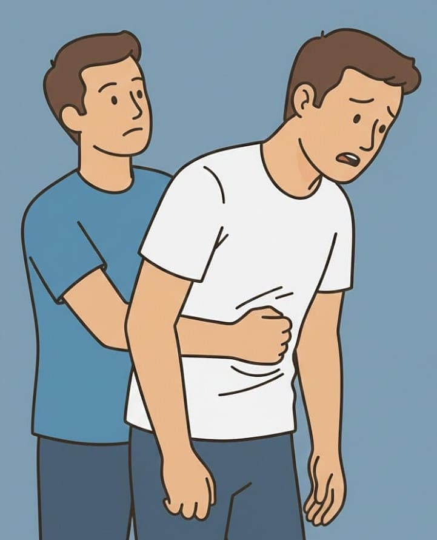
Presiona Mat'iy Ñit'iña
💪 Empuja fuerte y rápido
➡️ Hacia adentro y hacia arriba
🔁 Repite hasta que el objeto salga
💪 Kallpawan hinaspa usqhaylla ukhuman wichaymanpas mat'iy
🔁 Chayta ruway imapas siminmanta lloqsimunankama
💪 Ch'amampi ukat jank'aki manqharu ukat alayaru ñit'im
🔁 Ukham lurañamawa imas mistunipankama
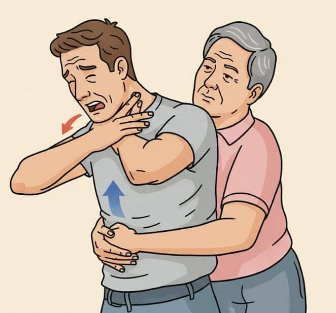
⚠️ SI SE DESMAYA Sichus pampaman urman Jan amuyaskirikitaxa
- Acuéstala en el suelo Pampapi siriykachiy Pamparu suma ikthapiyaña
- 🫀 Inicia RCP (solo compresiones) 🫀 RCP ruway: Qhasqunpi mat'iyta qallariy 🫀 RCP luraña: Chuymaparu ñit'iñampi qallart'aña
- 👁️ Si ves el objeto en la boca, sácalo con el dedo 👁️ Sichus imatapas siminpi rikunki chayqa, dedoykiwan horqoy 👁️ Imatas simipan uñjasta ukhaxa, luk'anampi apsuñamawa
- ❌ No metas los dedos si no ves nada ❌ Ama dedoykitaqa metiychu mana imatapas rikuspaqa ❌ Janiw luk'anaka manqharu churañäkiti jan imas uñjasaqa
💡 RECUERDA Ama qonqaychu Amtaskiñamawa
Aunque el objeto salga, debe ir al médico para revisión. Imapas lloqsimunña chaypas, doctorunamanpunin rinan qhawachikuq. Imas mistuñanipankamasa, qolliri ukarupuniw sarnatañapa uñjatäñapataki.
Manejo de desmayos (síncope): Yuyay chinkaqtin yanapay: Jayp'uñat yanapt'aña:
Coloca a la persona acostada boca arriba Runata wasanman pampapi siriykachiy Jaqiru qhipäxaru pampat ikthapiyaña
🛏️ En el suelo, en superficie plana. No la mantengas de pie.
🛏️ Pampapi, mast'asqa patapi churay. Ama sayachiychu.
🛏️ Pampana, planu patjana. Janiw sayt'ayañäkiti.
Eleva las piernas (30 cm) Chakinkunata huqariy (30 cm) Kayunaka jithsuyaña (30 cm)
📐 Levanta las piernas de la persona 30 cm, pon una mochila u objeto firme.
📐 Runapa chakinkunata 30 cm huqariy. Waykuta utaq ima sinchi kaqta churay yanapanaykipaq.
📐 Jaqin kayunaka 30 cm jithsuyañamawa. Walaypa jan ukax kuna ch'ama yänakata uchañamawa.
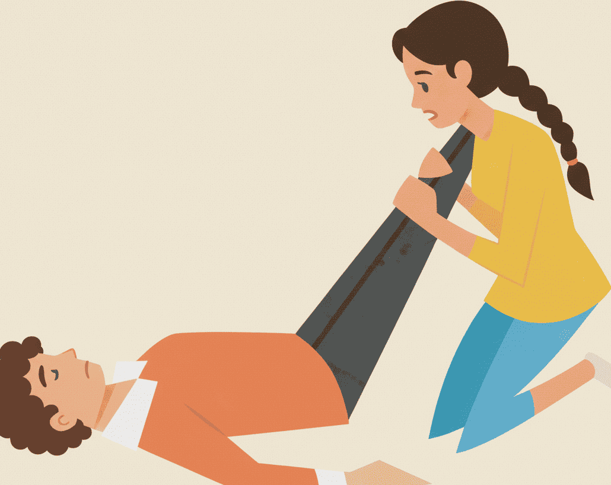
Afloja la ropa apretada Mat'isqa p'achakunata paskariy Ch'iphat p'achanaka jiwirayaña
👔 Desajusta corbatas, cinturones, cuellos de camisa o cualquier ropa apretada.
👔 Corbata, chumpi, kunkapi mat'isqa p'achata utaq ima mat'isqa p'achatapas paskariy.
👔 Corbata, chumpi, kunkan ch'iphat p'achanaka jan ukax kuna ch'iphat p'achanaksa kicharaña.
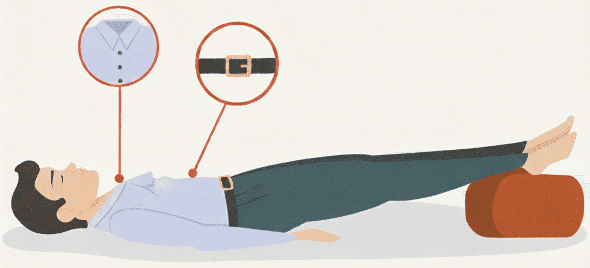
Cuando despierte, ayúdala a sentarse lentamente Rikch'arimuptinqa, pisi-pisimanta tiyaykachiy Sartatapaxa, pisi-pisit qunuyaña
⏱️ Déjala acostada unos minutos y ayúdala a sentarse lentamente antes de ponerse de pie.
⏱️ Sirisqata huk iskay minutokunata saqey, chaymanta pisi-pisimanta tiyaykachiy manaraq sayarichispa.
⏱️ Mä qawqha minutonaka ikisiñ siqaña, ukatxa k'acha-k'achat qunuyañ yanapt'aña janïr sayt'askama.
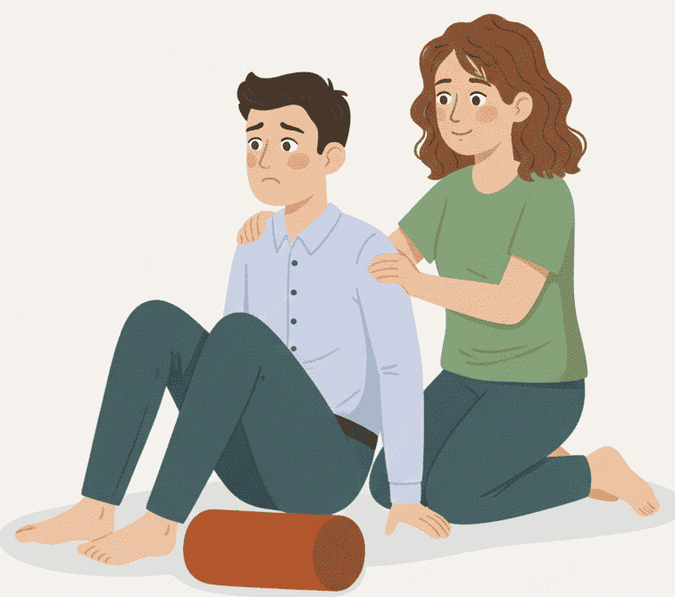
Si no responde en un minuto, llama a emergencias. Huk minutupi mana rikch'arimuptinqa, utqaylla yanapakuqkunata waqyay. Maya minututa jan jaysaspaxa, jank'akiw yanapirinakaru jawsam.
Verifica respiración y pulso Samayninta, sunqunpa takaynintapas qhawariy Samsuñapa ukat chuymap lat'iyapa uñjaña
👁️ Si no respira o no hay pulso → inicia RCP.
👁️ Mana samaptinqa utaq sunqun mana takaptinqa → RCP ruwayta qallariy.
👁️ Jan samsuskpanxa jan ukax chuymap jan lat'iykpanxa → RCP qalltañamawa.
Causas comunes de desmayos Imaraykutaq yuyay chinkan Kunats jaqix jayp'i
- Calor excesivo y deshidratación - El cuerpo pierde líquidos Ancha q'uñi, yaku pisiyay - Kurpupaq yaku chinkan Wali junt'u, uma pisiyaña - Jantiwix uma chhaqhayi
- Estar de pie mucho tiempo - La sangre se acumula en las piernas Unayta sayay - Yawarqa chakinkunapi tantakun Jaya sayt'asiña - Wilaw kayunakana tantachasi
- Ver sangre o escenas impactantes - Respuesta del sistema nervioso Yawarta rikuy utaq mancharikuy rikuykunata - Nervio sistemapa kutichinpaynin Wila uñjaña jan ukax manchachir uñjatanaka - Nervio sisteman kutichawipaxa
- Dolor intenso o emociones fuertes - Miedo, estrés o sorpresa Sinchi nanay utaq kallpasapa sienteykuna - Mancharikuy, llakikuy utaq muspharkuy Sinchi usuntaña jan ukax ch'ama sintinaka - Manchañ, llakisiñ jan ukax muspharkañ
- Levantarse muy rápido - Cambio brusco de posición Ancha utqayllamanta sayariy - Usqayllamanta cambio Wali jank'aki sayt'asiñ - Jank'aki mayjt'awixa
Cuándo buscar ayuda médica urgente Hayk'aqchus utqaylla hampiq yanapata maskana Kunawchas jank'aki qolliri thaqhañasa
Llama a emergencias inmediatamente si la persona:
Yanapakuyta utqaylla waqyay, sichus runaqa:
Yanapa thaqham jank'aki, sichus jaqix:
- No recupera la consciencia en 1 minuto Huk minutupi mana yuyayninman kutimunchu Jan maya minutuna amuyur kutipkchi
- Se golpeó la cabeza al caer Urmaspa umanta takakun Urmasawa p'iqit jaqatasi
- Tiene dolor en el pecho o dificultad para respirar Qhasqopi nanayninmi utaq samayqa sasam Jirjana usuntawixa jan ukax samañax ch'amawa
- Tiene convulsiones Khuyurikuykunayuqmi K'arkhatañanakawixa
- Está embarazada Wiksayuq kashan Wawampïskiwa
Durante una convulsión: Khatataqtin: Khuya khuya utjaskitapaxa:
Qué hacer: Imataq ruwana: Kuna lurañasa:
Mantén la calma y quédate con la persona Thasniyllawan runata yanapay Thaki thaki uñtata jaqimpi qhiparaña
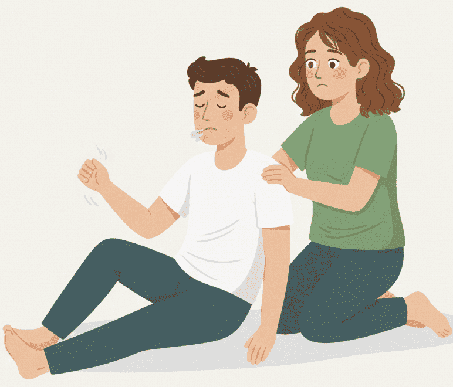
Anota la hora de inicio Iman horatachus qallarirqan chayta qhawariy Kuna horatachus qalltayi uk uñjaña
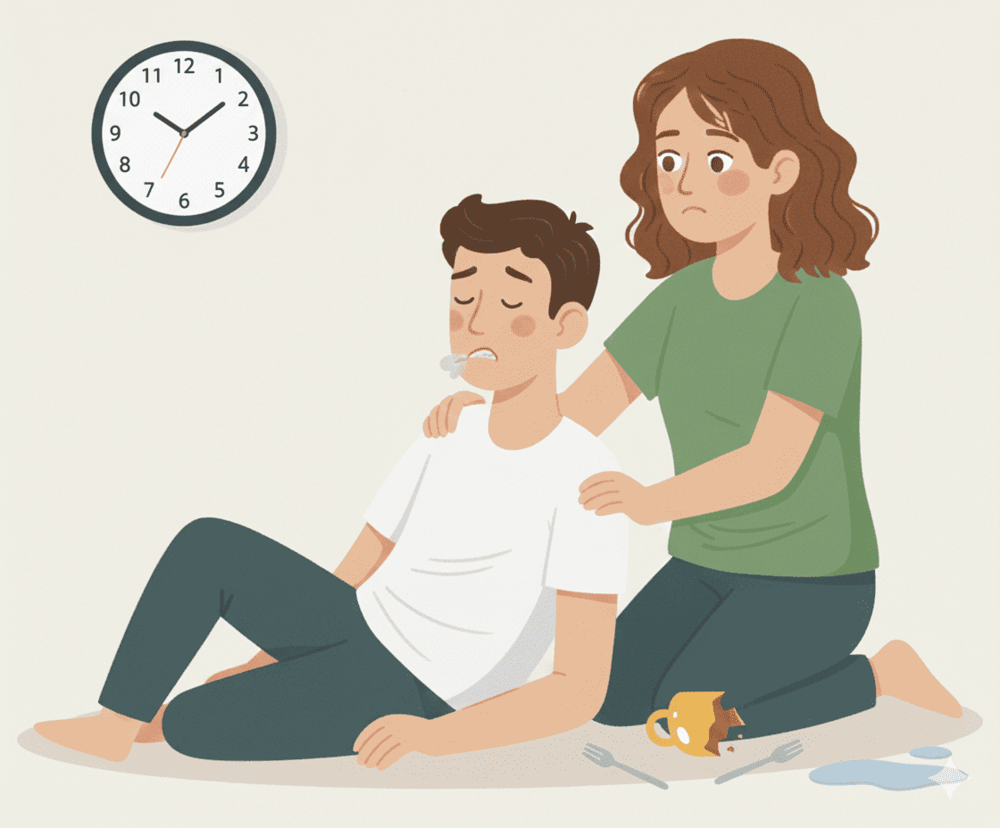
Aleja objetos peligrosos K'iriq imakunata karuman apay Peligruni yänaka karur jaquntaña
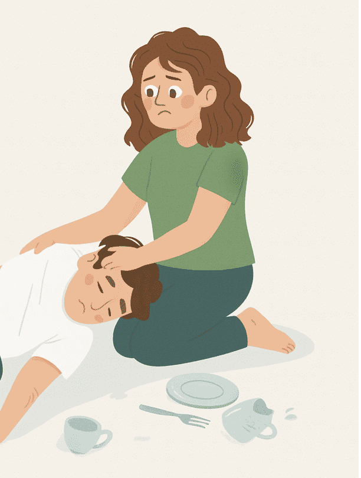
Coloca algo suave bajo la cabeza Uman uraman llamp'u imallatapas churay P'iqipa aynacharu llamp'u kuna uchaña

Voltea a la persona de lado después de la convulsión Tukukuptinqa ladunman sumaqta t'ikrarispa siriykachiy Tukuyatapaxa jaqiru mä tuqiru k'achachat jaqukiyaña
Llama a emergencias: Utqaylla yanapata mañakuy: Jank'aki yanapirinaka jawsam:
- Dura más de 5 minutos 5 minutumanta aswan unay kaptin 5 minutut sipansa unaypacha sarayaskpan
- Es la primera convulsión Ñawpaq kaq kutipi khatataptin Nayriri kutïpach ukhaxa
- Se lesiona durante la convulsión Khatataspa k'irikuptin Khuya khuyaskaspa ch'axwaski ukhaxa
- No recupera la consciencia Mana yuyayninman kutimuptin Janiw amuyupar kutinkiti ukhaxa
Sangrado Nasal (Epistaxis) Sinqa yawar lluqsiy Sinqa wila mistuña
Procedimiento: Imayna yanapana: Lurawinaka:
Inclina el cuerpo ligeramente hacia adelante Runata asllata ñawpaqman k'umuykachiy Jaqiru mä juk'a nayraqataru k'umuyt'ayaña
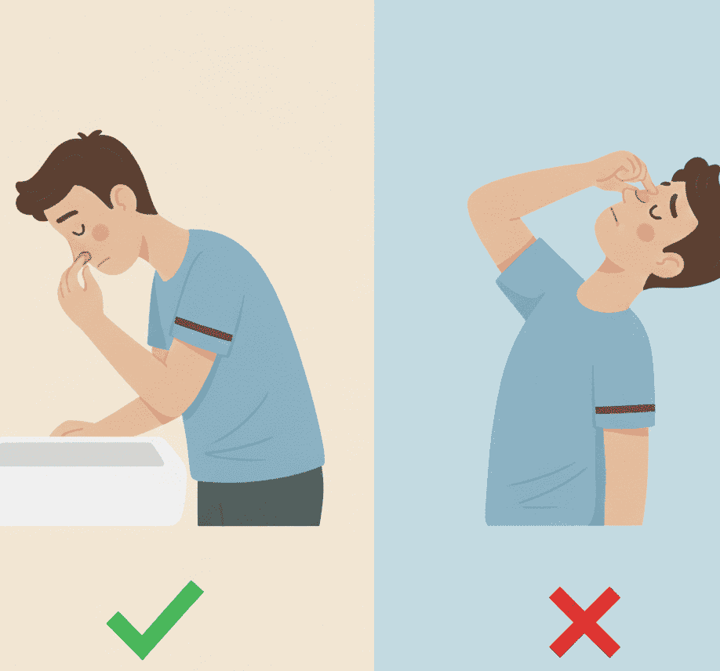
Presiona la parte blanda de la nariz durante 10 minutos Sinqapa llamp'u kaqninta chunkaniyuq (10) minuta ñit'iy Sinqa llamp'u tuqita tunka (10) minutoñkama ñit'iña
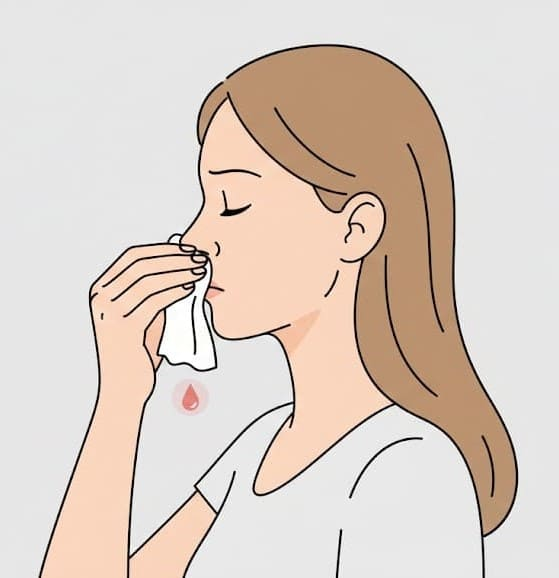
Coloca algo frío sobre el puente de la nariz Sinqa senqanman chiri imallatapas churay Sinqa taypinkaru chullunkha (thaya) kuna uchaña
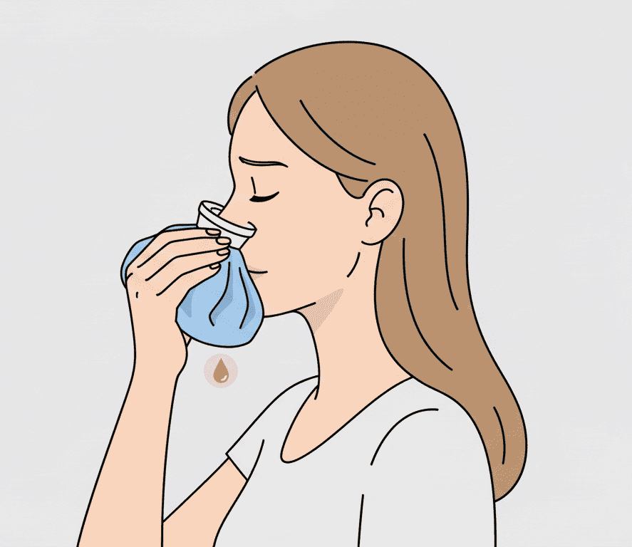
Acude a emergencias si: Emergenciaman riy sichus: Jank'aki yanapa thaqhaña sichus:
- El sangrado dura más de 20 minutos Yawar mana sayaptin iskay chunka (20) minutupi Wila mistuña jan sayt'kiti pä tunka (20) minutuna
- Hubo un golpe fuerte en la cabeza o nariz Umapi otaq sinqapi sinchi takay kaptin P'iqiru jan ukax sinqaru sinchi lunthapi (t'axlli) utjpan
- La persona está mareada o débil Runapa uman muyuptin otaq pisipaptin Jaqixa p'iqiw muyuni jan ukax ch'amapa pisiptpan
Posición de seguridad Allin siriykachiy Suma ikt'ayaña
(Para personas inconscientes o semiinconscientes que respiran) (Yuyaynin chinkasqa kaqkunapaq, ichaqa samashaqkunapaq) (Jaqinakataki khitinakatix jan amuyunkpacha, ukampis samsuskpaxa)
⚠️ Coloca a la persona de lado. Esto evita que se ahogue si vomita o tiene secreciones. Muévela con cuidado, solo si no está totalmente consciente.
⚠️ Runata ladunman siriykachiy. Kayqa yanapanmi ama aqtuspa p'itichikunanpaq. Sumaqllata kuyuchiy, mana allin yuyaypi kaptillan.
⚠️ Jaqiru mä tuqiru ikt'ayañamawa. Ukhamatwa jan aqtuxampi p'itichasiñapataki yanapt'i. K'acha-k'achat unjtayaña, jan amuyupankpach ukhaki.
Cuándo llamar a emergencias Hayk'aq yanapata mañakuna Kunawachas yanapt'iri jawsaña
📞 Llama de inmediato si la persona:
• No despierta
• Respira lento, irregular o con dificultad
• No puede mantenerse sentada
• Tiene convulsiones
• Vomita repetidamente
📞 Utqaylla doctorkunata waqyay kaykuna kaptin:
• Mana rikch'arimuptin
• Sasata otaq pisillata samaptin
• Mana tiyayta atiptin
• Khatataptin (convulsiones)
• Sapa kutilla aqtuspa kashaptin
📞 Jank'akiw doctorunaka jawsam jaqix:
• Jan sartankpa ukhaxa
• Ch'amampi jan ukax pisi-pisit samsuskpa ukhaxa
• Jan qunuñjamäkpach ukhaxa
• Khuya khuyaskpa (k'arkhataski) ukhaxa
• Sapa kuti aqtuskpa ukhaxa
Qué hacer mientras esperas Yanapa chayamunankama ruway Yanapt'iri purinkama luraña
• Quédate a su lado
• Vigila que siga respirando
• ❌ No le des agua, comida ni medicamentos
• ❌ No provoques el vómito (deja que ocurra solo)
• Ladunpi qhepakuy
• Qhaway sumaqtaraqchus samashan chayta
• ❌ Ama unuta, mikhuyta otaq hampita qoychu
• ❌ Ama aqtuchiychu (pay kikinmanta aqtunanta saqey)
• Jaqi k'atuna qhiparaña
• Samsuskpacha uk uñjañamapuniwa
• ❌ Janiw uma, manq'a jan ukax qollanaka churañäkiti
• ❌ Janiw aqtuyayañäkiti (pa kikipt aqtunapa jaytaña)
NO hagas esto Amapuni kayta ruwaychu Janiw akanaka lurañäkiti
• ❌ No la dejes sola
• ❌ No uses agua fría
• ❌ No la hagas caminar
👉 Déjala descansando de lado
• ❌ Ama sapallanta saqeychu
• ❌ Ama chiri unuwan qallpuychu
• ❌ Ama purichiychu
👉 Ladunman sirisqata samarichiy
• ❌ Janiw sapaki jaytañäkiti
• ❌ Janiw thaya umampi usuchayañäkiti
• ❌ Janiw sarnaqayañäkiti
👉 Mä tuqiru ikt'ata samarayaña
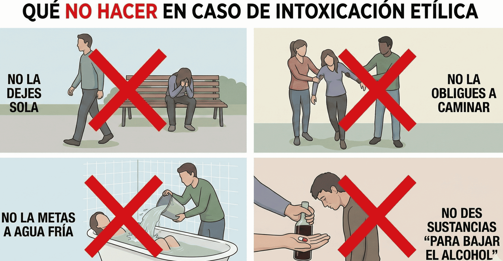
💙 Recuerda: actuar rápido y con calma puede salvar una vida 💙 Yuyariy: Utqaylla hinaspa thasniyllawan ruwayqa kawsaytan qispichin 💙 Amtam: Jank'aki ukat thaki thaki lurañax jakäwi qhispiyiwa
🧰 Botiquín de Primeros Auxilios 🧰 Ñawpaq yanapakuy q'ipi 🧰 Nayriri yanapaña q'ipi
Contenido esencial del botiquín: Q'ipipi necesario kasqankuna: Q'ipinkir wakiskir uñacht'awinaka:
Material para curaciones básicas K'irikunata jampinapaq Usunaka qullañataki
Esencial: Material estéril para curar heridas, controlar hemorragias y proteger lesiones.
Ancha chaniyuq: Ch'uya imaykunawan k'irikunata hampiq, yawar sayachiq, k'irikunata waqaychaq.
Wali askinaka: Q'uma uñacht'awinakaxa usunaka qullañataki, wila sayarachañataki, usuntañanak uñjañataki.
- Gasas estériles Ch'uya phuchkakuna Q'uma phuchkanaka
- Vendas (elástica y gasa) Hampi mayt'ukuna Wila sayt'ayaña mayt'unaka
- Apósitos adhesivos (Curitas) K'iri p'istuna K'iri llawch'inakapa
- Guantes descartables Makipaq millq'ay Ampar ch'uspaka
- Alcohol o desinfectante Hampi unu Hampi uma
- Suero fisiológico Ch'uya unu Suero fisiológico
- Esparadrapo Llawch'i p'istuna Llawch'i ch'uspaka
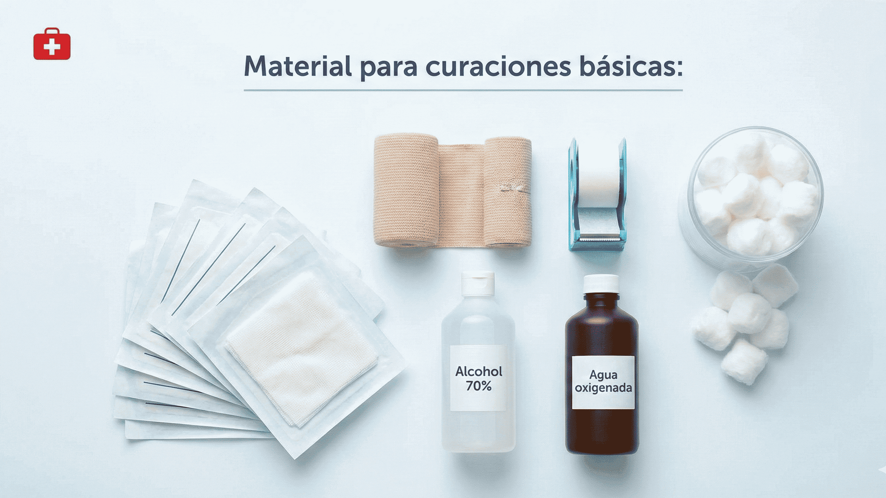
Medicamentos esenciales Pisi hampikuna Juk'a qullanaka
⚠️ Importante: Verifica fechas de vencimiento cada 3 meses. Guarda en lugar fresco y seco. Verifica que no haya alergias.
⚠️ Ancha chaniyuq: Sapa kimsa killapi tukuy p'unchawkunata qhawariy. Chiri, ch'aki cheqaspi waqaychay. Qhaway ama "alérgico" kananpaq.
⚠️ Wali askinaka: Sapa kimsa phaxsit tukuyañ urunakapar uñjaña. Thaya, ch'aki chiqankir imaña. Uñjañamawa jan "alergia" utjaskitapa.
- Paracetamol (para dolor) Nanaypaq hampi Usunakataki qulla
- Antihistamínico (para alergias) "Alergia" hampi "Alergia" qulla
- Sales de rehidratación Kallpachaq unu Ch'amañchaña uma
Herramientas importantes Yanapaq k'illaykuna Yanapiri yänaka
🛠️ Esencial: Instrumentos para atención segura e higiénica de emergencias.
🛠️ Ancha chaniyuq: Ch'usaq kuti hampikuypaq allilla, ch'uya llank'anakuna.
🛠️ Wali askinaka: Emergencianaka suma, ch'uña qullañataki uñacht'awinaka.
- Tijeras punta roma Khuta k'utuq K'utuña
- Pinzas Aysana Aysaña
- Termómetro Q'uñi tupuna Janch'i t'urpuna
- Linterna K'anchana Qhanaña
Material de emergencia adicional Yapamanta ch'usaq kuti imaynamanta Yapxat emergencia uñacht'awinaka
🆘 Crítico: Material especializado para situaciones graves que requieren atención inmediata.
🆘 Ancha chaniyuq: Llakikuy hatunkunapaq especializado imaynamanta utqalla yanapay munakuq.
🆘 Wali askinaka: Jach'a llakisiñanakataki especializado uñacht'awinaka jank'ak yanapañ munaski.
- Revisión periódica: Verifica las fechas de vencimiento cada 3 meses y reemplaza lo vencido inmediatamente. 📅 Killa tupu: Sapa 3 killa qhaway hampi wañuypa p'unchayninta. 📅 Uruyawi uñjaña: Sapa 3 phaxsi qullanaka uñjañamawa.
- Ubicación correcta: Mantén el botiquín en lugar fresco (15-25°C), seco y protegido de la luz solar directa. Allin cheqaspi churay: Q'ipita chiri cheqaspi (15-25°C), ch'aki, inti k'anchaymanta waqaychasqa cheqaspi waqaychay. Suma chiqan churañ: Q'ipi thaya chiqan (15-25°C), ch'aki, inti qhanat jark'at chiqankir imaña.
- Seguridad infantil: Guarda fuera del alcance de los niños, idealmente en armario con llave o en altura superior a 1.5 metros. 🔒 Wawakunamanta karupi: Ama wawakuna hap'inapaq jina churay. 🔒 Wawanakatxa karuru: Wawanaka jan katjañapataki imaña.
- Accesibilidad: Todos en casa deben saber dónde está el botiquín y cómo usarlo. Considera tener uno en casa, carro y trabajo. 📍 Lliwpis yachananku: Maypichus kashan chayta lliuy yachananku. 📍 Taqpachani yatiñapa: Kawkinsa q'ipix utji uk taqpachani yatiñapawa.
- Inventario actualizado: Mantén una lista pegada en la tapa del botiquín con todo su contenido y fechas de vencimiento. Musuq lista: Q'ipi tapanpi k'askasqa listata waqaychay tukuy imakunawan, tukuy p'unchawninkunawanpas. Machaq qillqata: Q'ipi tapankiruw k'askat qillqata imaña taqpach uñacht'awinakampi, tukuyañ urunakapataki.
🚑 Ambulancia / Salud 🚑 Hampi wasi 🚑 Hampi wasi
🚒 Bomberos 🚒 Ninapacha yanapiri 🚒 Ninapacha yanapiri
👮 Policía 👮 Policiya 👮 Policiya
☎️ Familiar: ☎️ Ayllu: ☎️ Familjar: _____________ _____________ _____________
Glosario de Términos Médicos Hampiq Simikunapaq Qillqa Qolla Arunakana Qillqawi
Asfixia P'itichikuy Jiwayasiña
Obstrucción de las vías respiratorias que impide la respiración.
Samay mana yaykuptin.
Samsu jan mantkpan.
Desfibrilador Sunqu kawsachina Chuyma jakayaña
Dispositivo que envía descargas eléctricas al corazón.
Sunquman "electricidad" churaq.
Chuymaru "corriente" churaña.
Hemorragia Yawar hich'akuy Wila mistuña
Pérdida abundante de sangre.
Sinchi yawar lluqsiy.
Sinchi wila mistuñapa.
Hipotermia Chiri unquy Sinch'i thaya usupa
Temperatura corporal peligrosamente baja.
Cuerpo sinchita chiriyaptin.
Janchi sinch'i thayariptan.
Paro cardíaco Sunqu sayay Chuyma sayt'awi
El corazón deja de latir efectivamente.
Sunqu mana palpaptin.
Chuyma jan palpankpan.
Pulso T'iktiku Palpapu
Latido del corazón que se siente en las arterias.
Sunqupa palpakuynin.
Chuyma palpayaskatapa.
Reanimación Kawsarichiy Jakañaru kutt'ayaña
Restaurar las funciones vitales del cuerpo.
Wañushaqta kawsarichiy.
Jiwayasit kawsarichiyaña.
Shock Manchay p'iti Sinch'i pisiptaña
Condición grave donde el cuerpo no recibe suficiente sangre.
Cuerpopa kallpan pisiyaptin.
Janchixa ch'ama pisiptatapa.
Síncope Yuyay chinkay Yuyaya ch'amakt'awi
Pérdida temporal de la consciencia (desmayo).
Chirispa urmay (desmayo).
Jan amuyuni ikt'aña.
Taquicardia Phutiti sunqu Jank'a chuymata t'urt'aña
Ritmo cardíaco anormalmente rápido.
Sunqu sinchita t'iktikyaptin.
Chuymata jank'aki palpayatapa.
Trauma Sinchi k'iri Sinch'i usuchasiña
Lesión física grave causada por fuerza externa.
Hatun takaymanta k'iri.
Sinchi lunthapita usuchasiña.
Vías aéreas Samana ñan Samsu thakhi
Conductos por donde pasa el aire para respirar.
Wayra yaykuna t'uqukuna.
Wayra mantiña thakhinaka.

Números de emergencia importantes: Emergencia yanapaypa chaniyuq yupaykuna: Emergencia yanapawi wali askir yupawinaka:
SAMU (Emergencias Médicas) Hampi yanapakuy Qullaña yanapa
EsSalud Seguro hampi wasi Seguro qullaña wasi
Bomberos Nina thasniqkuna Nina jiwayirinaka
Policía Willaqkuna Policiyanaka
Defensa Civil Llaqta amachay Marka arktawi
Cruz Roja Puka Chakana Wila Chakana